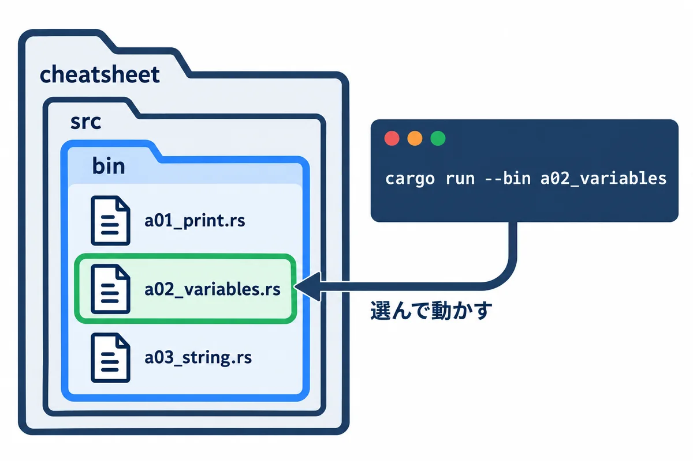
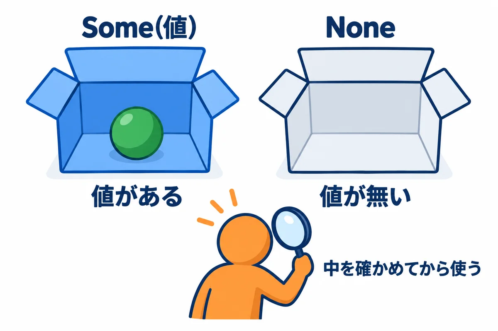
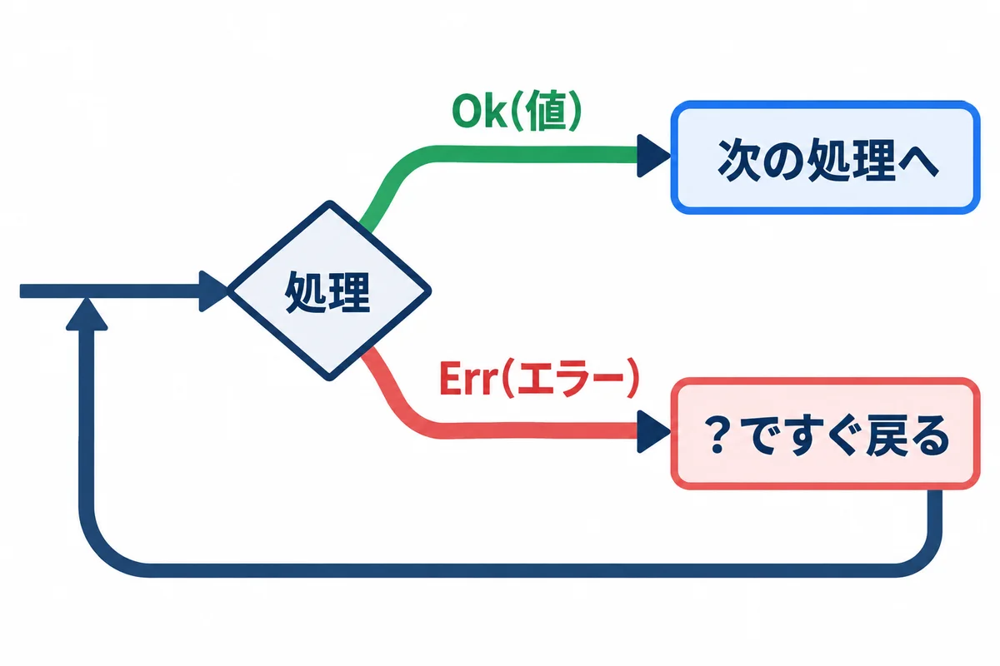
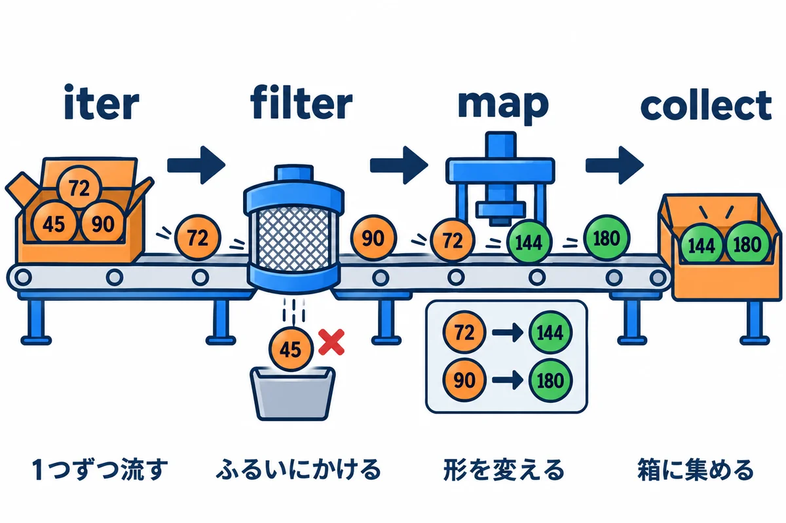
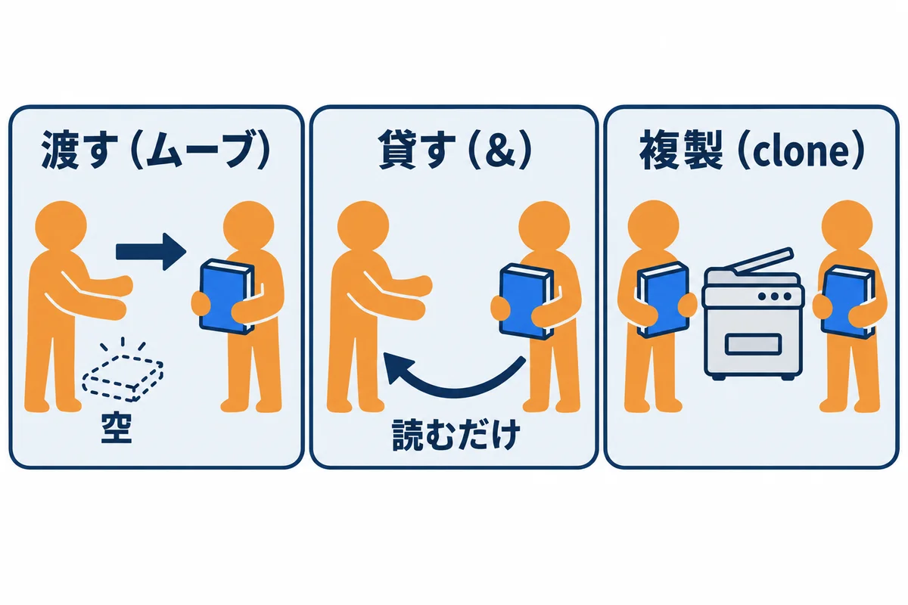
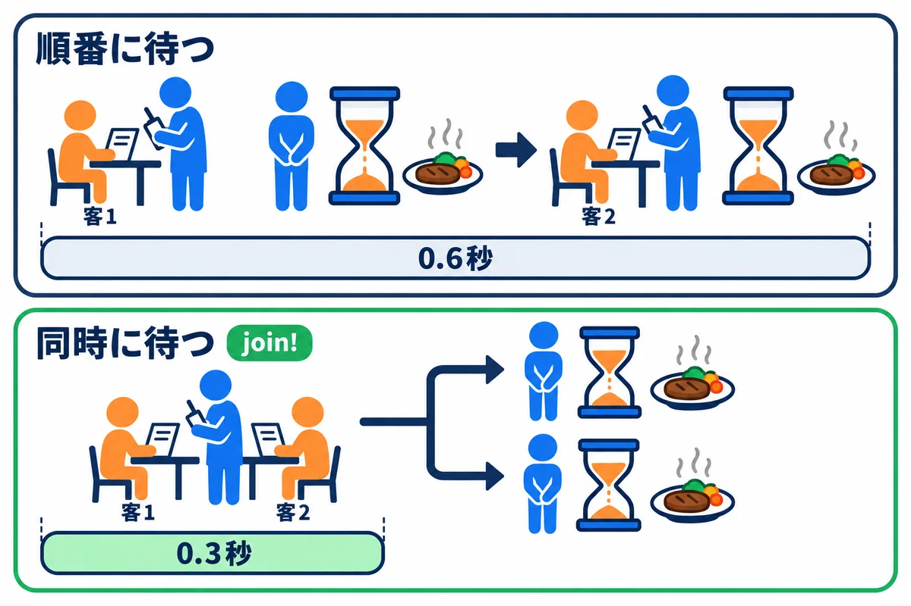
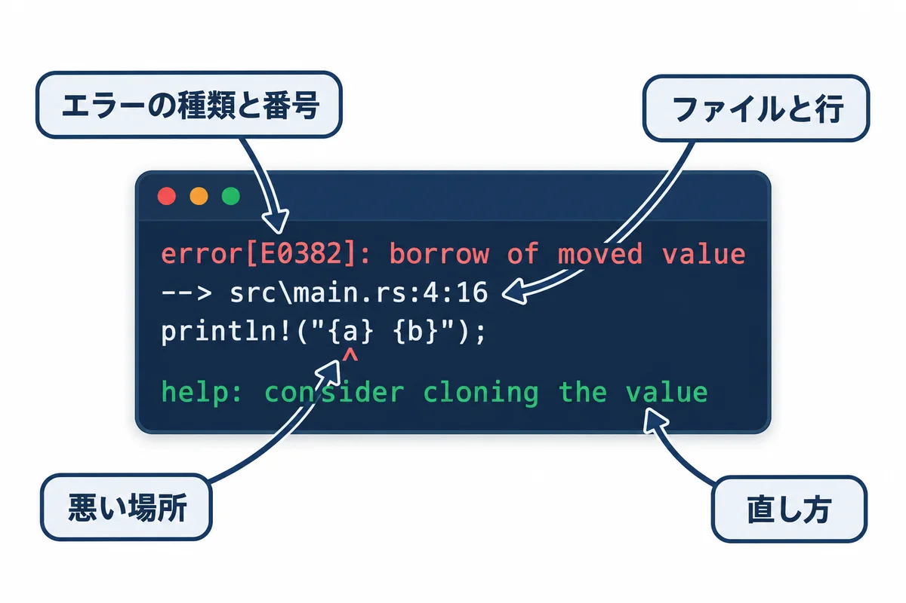

APPENDIX / RUST BACKEND MASTERY
付録 — よく使う機能の早見表とサンプル集
「あれ、どう書くんだっけ？」をすぐ引ける。全部のサンプルを、実際に動かした結果つきで
色の付いた枠のコードの、右上の「コピー」ボタンを押してください。コピーしたら、PDF を見ていた画面に戻ります（ブラウザーで PDF を見ていた時は「戻る」、VS Code で見ていた時は VS Code の窓に切り替えます）。
この付録は、Rust で毎日のように使う機能を、1 か所に集めた「引くための本」です。第0巻〜第13巻の本文で学んだことを、次の形でまとめ直しました。
読み方: 頭から全部読む必要はありません。困った時に、下の「やりたいこと → 見る所」の表から探して、その節だけ読んでください。サンプルは、写して動かして、少し書きかえてもう一度動かすのがいちばん身に付きます。
前提: 第0巻の「はじめに: 手を動かす準備」で、Rust を入れてあること（cargo --version で版が出る）。
| やりたいこと | 見る所 |
|---|---|
| フォルダを移動する・ファイルをコピーする・中身を見る | A-1 PowerShell の基本操作 |
| プロジェクトを作る・動かす・整える・部品（クレート）を足す | A-2 cargo のコマンド |
| Rust の版を確かめる・新しくする | A-3 rustup |
| VS Code で速く書く | A-4 VS Code の操作 |
| 変更を記録する・前の状態に戻す | A-5 Git の基本 |
| 画面に文字や数を、形を整えて出す | B-01 println! と format! |
| 変数・数の型・型の変換 | B-02 変数と数 |
| 文字列をつなぐ・分ける・探す・数に直す | B-03 文字列 |
| 並び（リスト）に足す・並べかえる・探す | B-04 Vec |
| 名前で引ける表・数を数える・重複を消す | B-05 HashMap・BTreeMap・HashSet |
| 「無いかもしれない値」を扱う | B-06 Option |
| 「失敗するかもしれない処理」を扱う | B-07 Result とエラー |
| 1 つずつ変換・絞り込み・集計する | B-08 イテレーター |
| 場合分け・くり返し | B-09 if・match・loop・while・for |
| データの形を決める・メソッドを付ける | B-10 構造体と列挙型 |
| 違う型に共通の動きを持たせる | B-11 トレイトとジェネリクス |
| 小さな関数をその場で作る | B-12 クロージャ |
| 「値が移る」「借りる」を理解する | B-13 所有権と借用 |
| ファイルを読む・書く・フォルダを作る | B-14 ファイルとフォルダ |
| 引数・環境変数を受け取る | B-15 引数と環境変数 |
| 時間を測る・待つ | B-16 時間 |
| ファイルを分けて整理する | B-17 モジュール |
| 自動のテストを書く | B-18 テスト |
| 同時に動かす | B-19 スレッド |
| JSON を読む・書く | B-20 JSON（serde） |
| エラーに説明を付けて返す | B-21 anyhow |
| 非同期（async/await）で待つ | B-22 tokio |
| コンパイルエラーの意味が分からない | C 章 |
| Web アプリ・SQL の書き方を探す | D 章 |
cheatsheet を作るB 章の 22 本のサンプルは、全部 cheatsheet（早見表）という 1 つのプロジェクトの中で動かします。第0巻では src\main.rs を毎回書きかえましたが、この付録ではサンプルごとに別のファイルにします。こうすると、前のサンプルを消さずに、いつでも動かし直せます。

手順1: プロジェクトを作る。 PowerShell に、次の行を 1 行ずつ打ちます。
# 練習用のフォルダ rust-study へ移動する（第0巻で作ったフォルダ）
cd ~\rust-study
# プロジェクト cheatsheet を作って、その中へ移動する
cargo new cheatsheet
cd cheatsheet
# サンプルを置くフォルダ src\bin を作る
mkdir src\bin
手順2: サンプルのファイルを作る。 src\bin の中に、サンプルの名前のファイル（例: a01_print.rs）を作り、コードを貼り付けて保存します。VS Code なら、PowerShell で code . と打ってフォルダを開き、左の一覧で src → bin を右クリック →「新しいファイル」で名前を付けます。メモ帳なら notepad src\bin\a01_print.rs と打つと、「新しく作りますか？」と聞かれるので「はい」を押します。
手順3: 動かす。 --bin のあとに、ファイルの名前（.rs を除いた部分）を書きます。
cargo run -q --bin a01_print
-q は、Compiling ...・Finished ...・Running ... の 3 行を省いて、プログラムが出した行だけを見せる指定です（q は quiet＝静かに）。src\bin にファイルが 2 つ以上あると、--bin を付けずに cargo run と打った時に「どれを動かすか決めてください」というエラーになります。この付録では、いつも --bin 名前 を付けます。手順4: 部品（クレート）を足す（B-20〜B-22 だけ）。 B-20〜B-22 は、Rust に最初から入っていない部品を使います。その節の前で、cargo add で足します（A-2 で説明します）。足すのは 1 回だけでかまいません。
コードのコピー: PDF を VS Code で見ている時は、サンプルの枠の 1 行目の最初の文字の上から、最後の行の最後の文字の上までをマウスでなぞって選び（始めと終わりは文字の上で。何もない所から始めたり、何もない所まで行ったりすると正しく選べません）、Ctrl ＋ C を押すと、字下げもそのままコピーできます（「コピー」の左にオレンジの字で「なぞってコピーすると…」と書いてある枠だけは、次の「コピー」を使います。くわしくは第0巻の P-6）。PDF を Chrome や Edge で見ている時は、コードの枠の右上の青い「コピー」を押すと、ブラウザーで Web 版（https://oltotlo79-rgb.github.io/education/ にある HTML 版）のそのサンプルが開きます（PDF を VS Code で見ていても同じです）。そこで「コピー」ボタンを押すと、字下げもそのまま 1 回でコピーできます（くわしくは第0巻の P-6）。何行も貼り付けた時に確認が出たら、安全の確認なので、Windows Terminal なら「強制的に貼り付け」、VS Code のターミナルなら「貼り付け」を押します（「1 行として貼り付け」は押しません）。
PowerShell は、文字で PC に命令する画面です（第0巻 P-1）。ここでは、ファイルとフォルダの操作でよく使う命令をまとめます。PowerShell には、昔からの短い呼び名（cd・ls・mkdir など）も用意されています。
| やりたいこと | 打つ命令 | 短い呼び名・メモ |
|---|---|---|
| 今いるフォルダを表示する | Get-Location |
pwd |
| フォルダを移動する | cd フォルダ名 |
cd .. で 1 つ上、cd ~ でホーム（C:\Users\you） |
| 中身の一覧を見る | Get-ChildItem |
ls・dir。-Recurse で中のフォルダまで |
| フォルダを作る | mkdir 名前 |
途中のフォルダもまとめて作れる |
| ファイルに書く（上書き） | Set-Content 名前 "文字" -Encoding utf8 |
日本語を書く時は -Encoding utf8 を付ける |
| ファイルに書き足す | Add-Content 名前 "文字" -Encoding utf8 |
|
| ファイルの中身を見る | Get-Content 名前 -Encoding utf8 |
cat。-Tail 20 で最後の 20 行 |
| コピーする | Copy-Item 元 先 |
cp |
| 名前を変える | Rename-Item 元 新しい名前 |
|
| 移動する | Move-Item 元 先 |
mv |
| 消す | Remove-Item 名前 |
rm。フォルダは -Recurse。ごみ箱に入らないので注意 |
| ある？ | Test-Path 名前 |
True か False が出る |
| 文字を探す | Select-String -Path 名前 -Pattern "文字" |
何行目にあるかも出る |
| コマンドの場所を見る | (Get-Command cargo).Source |
「入っているか」の確認に使う |
| 前に打った命令を出す | ↑ キー |
Tab キーで名前の続きを自動で入れる |
| 動いている命令を止める | Ctrl ＋ C |
サーバーを止める時もこれ |
| 画面を消す | cls |
▶ 書く所と動かし方: PowerShell に 1 行ずつ打ちます。ps-practice という練習用のフォルダを作り、ファイルを作って、コピー・移動・検索をして、最後にフォルダごと消します。
cd ~\rust-study
mkdir ps-practice
cd ps-practice
Get-Location
Set-Content memo.txt "1 行目" -Encoding utf8
Add-Content memo.txt "2 行目: rust" -Encoding utf8
Get-Content memo.txt -Encoding utf8
Copy-Item memo.txt memo-copy.txt
Rename-Item memo-copy.txt backup.txt
mkdir old
Move-Item backup.txt old\
Get-ChildItem
Get-ChildItem -Recurse -Name
Select-String -Path memo.txt -Pattern "rust" -Encoding utf8
Test-Path old\backup.txt
Remove-Item old -Recurse
Test-Path old
cd ..
Remove-Item ps-practice -Recurse
▶ ここで初めて出てくるコード
Add-Content（PowerShell）: ファイルの後ろに書き足すコマンド。Add-Content memo.txt "2 行目" -Encoding utf8。中身を置きかえるのはSet-Contentです。Add-Content -Encoding（PowerShell）:-Encoding utf8で、書き足す文字を UTF-8 で書きます（日本語を書く時は付けておきます）。Get-Content -Encoding（PowerShell）:-Encoding utf8で、ファイルを UTF-8 として読みます。付けないと、Windows PowerShell 5.1 では日本語が化けることがあります。Rename-Item（PowerShell）: ファイルやフォルダの名前を変えるコマンド。Rename-Item 今の名前 新しい名前。Move-Item（PowerShell）: ファイルやフォルダを、別の場所へ移すコマンド（短い呼び名はmv）。Move-Item ファイル 先のフォルダ\。Get-ChildItem -Recurse（PowerShell）:-Recurseで、中のフォルダの中まで全部を一覧にします。Select-String（PowerShell）: ファイルの中から、文字を含む行を探すコマンド。何行目に見つかったかも表示します。Select-String -Path（PowerShell）:-Path ファイルで、探すファイルを指定します。*.logのように、いくつものファイルも指定できます。Select-String -Pattern（PowerShell）:-Pattern "文字"で、探す文字を指定します。"ERROR|WARN"のように、|で「または」にもできます（正規表現）。Select-String -Encoding（PowerShell）:-Encoding utf8で、ファイルを UTF-8 として読んで探します。Remove-Item -Recurse（PowerShell）: フォルダを、中身ごと全部消すオプション。消した物は「ごみ箱」に入らず、元に戻せないので、場所をよく確かめてから使います。
▼ 実行結果（表示が出る命令だけ。mkdir の表示は省いています）
Get-Location:
Path
----
C:\Users\you\rust-study\ps-practice
Get-Content memo.txt -Encoding utf8:
1 行目
2 行目: rust
Get-ChildItem（日時は、打った日時になります）:
ディレクトリ: C:\Users\you\rust-study\ps-practice
Mode LastWriteTime Length Name
---- ------------- ------ ----
d----- 2026/11/02 14:58 old
-a---- 2026/11/02 14:58 29 memo.txt
Get-ChildItem -Recurse -Name:
old
memo.txt
old\backup.txt
Select-String -Path memo.txt -Pattern "rust" -Encoding utf8:
memo.txt:2:2 行目: rust
Test-Path old\backup.txt → Remove-Item old -Recurse → Test-Path old:
True
False
ここがポイント:
Get-ChildItem の Mode の列の d はフォルダ、a はファイルです。Length はファイルの大きさ（バイト）です。memo.txt が 29 バイトなのは、日本語が 1 文字 3 バイト・改行が 2 バイト、それに UTF-8 の印（BOM）の 3 バイトが付くからです。Select-String の memo.txt:2:2 行目: rust は「memo.txt の 2 行目に、2 行目: rust という行がある」という意味です。Remove-Item で消したファイルはごみ箱に入りません。消す前に Get-ChildItem で中身を確かめる習慣を付けましょう。よくある間違い:
-Encoding utf8 を付けずに日本語を書く: Windows PowerShell 5.1 の Set-Content は、指定しないと古い文字コード（Shift_JIS）で書きます。そのファイルを Rust で読むと、文字化けやエラーになります。cd My Folder は 2 つの言葉に分かれてしまいます。cd "My Folder" のように " で囲みます。cargo は、Rust のプロジェクトを作る・翻訳する・動かす・テストする・部品を足す、を全部受け持つ道具です。
| やりたいこと | 打つ命令 | メモ |
|---|---|---|
| 新しいプロジェクトを作る | cargo new 名前 |
フォルダ・Cargo.toml・src\main.rs・Git の準備までしてくれる |
| 翻訳して動かす | cargo run |
-q で cargo の表示を省く。--bin 名前 で動かすファイルを選ぶ |
| プログラムに引数を渡す | cargo run -- 引数1 引数2 |
-- から後ろがプログラムへ渡る（B-15） |
| 間違いがないかだけ調べる | cargo check |
実行ファイルを作らないので速い。書きながら何度も打つ |
| 実行ファイルを作る | cargo build |
target\debug\ にできる |
| 速い実行ファイルを作る | cargo build --release |
target\release\ にできる。本番用。翻訳は遅い |
| テストを動かす | cargo test |
cargo test 名前の一部 で絞り込める（B-18） |
| 書き方を整える | cargo fmt |
字下げ・改行を自動で整える。--check は「整っているか」だけ調べる |
| もっと良い書き方を教えてもらう | cargo clippy |
動くけれど直した方がよい所を、理由つきで教えてくれる |
| 部品（クレート）を足す | cargo add 名前 |
--features 機能 で追加の機能も選べる |
| 部品を外す | cargo remove 名前 |
|
| 使っている部品の一覧 | cargo tree --depth 1 |
--depth を外すと、部品が使う部品まで全部 |
| 部品を新しい版にする | cargo update |
Cargo.lock を書きかえる |
| 説明書（ドキュメント）を見る | cargo doc --open |
自分のコードと部品の説明書をブラウザーで開く |
| 翻訳したファイルを全部消す | cargo clean |
target フォルダが大きくなった時に。次の翻訳は時間がかかる |
▶ 書く所と動かし方: PowerShell で cd ~\rust-study してから打ちます。tools-demo という練習用のプロジェクトを作り、わざと読みにくく書いたコードを cargo fmt と cargo clippy で直します。
cargo new tools-demo
cd tools-demo
cargo run
cargo check
▼ 実行結果（cargo run）
Compiling tools-demo v0.1.0 (C:\Users\you\rust-study\tools-demo)
Finished `dev` profile [unoptimized + debuginfo] target(s) in 0.26s
Running `target\debug\tools-demo.exe`
Hello, world!
▼ 実行結果（cargo check）
Checking tools-demo v0.1.0 (C:\Users\you\rust-study\tools-demo)
Finished `dev` profile [unoptimized + debuginfo] target(s) in 0.12s
Compiling（翻訳しています）→ Finished（終わりました）→ Running（動かします）の順に出て、最後にプログラムが出した Hello, world! が出ます。cargo check は Checking と出て、実行はしません。Finished の秒数が cargo run より短いのが分かります。次に、src\main.rs を、わざと字下げなしで次のように書きかえて保存します。
fn main() {
let names = vec!["a", "b"];
if names.len() == 0 { println!("空です"); }
for i in 0..names.len() { println!("{}", names[i]); }
}
cargo fmt --check
cargo fmt
cargo clippy
▼ 実行結果（cargo fmt --check。- の行が今の書き方、+ の行が整えたあとの書き方。画面では色が付きます）
Diff in C:\Users\you\rust-study\tools-demo\src\main.rs:1:
fn main() {
-let names = vec!["a", "b"];
-if names.len() == 0 { println!("空です"); }
-for i in 0..names.len() { println!("{}", names[i]); }
+ let names = vec!["a", "b"];
+ if names.len() == 0 {
+ println!("空です");
+ }
+ for i in 0..names.len() {
+ println!("{}", names[i]);
+ }
}
cargo fmt は何も表示しませんが、src\main.rs が次のように整います。
fn main() {
let names = vec!["a", "b"];
if names.len() == 0 {
println!("空です");
}
for i in 0..names.len() {
println!("{}", names[i]);
}
}
▼ 実行結果（cargo clippy）
Checking tools-demo v0.1.0 (C:\Users\you\rust-study\tools-demo)
warning: length comparison to zero
--> src\main.rs:3:8
|
3 | if names.len() == 0 {
| ^^^^^^^^^^^^^^^^ help: using `is_empty` is clearer and more explicit: `names.is_empty()`
|
= help: for further information visit https://rust-lang.github.io/rust-clippy/rust-1.99.0/index.html#len_zero
= note: `#[warn(clippy::len_zero)]` on by default
warning: the loop variable `i` is only used to index `names`
--> src\main.rs:6:14
|
6 | for i in 0..names.len() {
| ^^^^^^^^^^^^^^
|
= help: for further information visit https://rust-lang.github.io/rust-clippy/rust-1.99.0/index.html#needless_range_loop
= note: `#[warn(clippy::needless_range_loop)]` on by default
help: consider using an iterator
|
6 - for i in 0..names.len() {
6 + for <item> in &names {
|
warning: useless use of `vec!`
--> src\main.rs:2:17
|
2 | let names = vec!["a", "b"];
| ^^^^^^^^^^^^^^ help: you can use an array directly: `["a", "b"]`
|
= help: for further information visit https://rust-lang.github.io/rust-clippy/rust-1.99.0/index.html#useless_vec
= note: `#[warn(clippy::useless_vec)]` on by default
warning: `tools-demo` (bin "tools-demo") generated 3 warnings (run `cargo clippy --fix --bin "tools-demo" -p tools-demo -- ` to apply 2 suggestions)
Finished `dev` profile [unoptimized + debuginfo] target(s) in 0.15s
clippy は 3 つの「もっと良い書き方」を教えてくれました。
| clippy の指摘 | 意味 | 直し方 |
|---|---|---|
length comparison to zero |
「長さが 0 か」は is_empty() の方が読みやすい |
if names.is_empty() { |
the loop variable i is only used to index names |
番号を使わずに、中身を直接回せる | for name in &names { println!("{name}"); } |
useless use of vec! |
中身を足したり消したりしないなら、vec! でなく配列で足りる |
let names = ["a", "b"]; |
部品（クレート）を足す・外す: 部品は、世界中の人が公開している Rust のライブラリです。公開先（crates.io）から、cargo が自動で取ってきます。
cargo add serde_json
cargo tree --depth 1
cargo remove serde_json
▼ 実行結果（cargo add serde_json）
Updating crates.io index
Adding serde_json v1.0.154 to dependencies
Features:
+ std
- alloc
- arbitrary_precision
- float_roundtrip
- indexmap
- preserve_order
- raw_value
- unbounded_depth
Updating crates.io index
Locking 11 packages to highest Rust 1.99.1 compatible versions
Adding itoa v1.0.18
Adding memchr v2.8.3
Adding proc-macro2 v1.0.107
Adding quote v1.0.47
Adding serde v1.0.229
Adding serde_core v1.0.229
Adding serde_derive v1.0.229
Adding serde_json v1.0.154
Adding syn v3.0.9
Adding unicode-ident v1.0.27
Adding zmij v1.0.23
▶ ここで初めて出てくるコード
cargo remove（cargo のコマンド）: プロジェクトから部品（クレート）を外すコマンド。Cargo.tomlの[dependencies]から、その行を消します。
▼ 実行結果（cargo tree --depth 1）
tools-demo v0.1.0 (C:\Users\you\rust-study\tools-demo)
└── serde_json v1.0.154
▼ 実行結果（cargo remove serde_json）
Removing serde_json from dependencies
cargo add は Cargo.toml の [dependencies] に 1 行足します。版の数字は、その日の最新になります（serde_json v1.0.154 の部分は、打った日によって変わります）。Features: の + は「入った機能」、- は「入っていない機能（必要なら --features で足せる）」です。Adding itoa ... などは、serde_json が中で使う部品です。cargo が自動で一緒に入れます。よくある間違い:
Cargo.toml があるフォルダの外で打つ: error: could not find `Cargo.toml` in `（今のフォルダ）` or any parent directory と出たら、cd でプロジェクトのフォルダへ移動してから打ちます。cargo run: エディターで Ctrl ＋ S を押してから打ちます。前のコードのまま動いてしまいます。| やりたいこと | 打つ命令 |
|---|---|
| 入っている Rust の版を見る | rustc --version・cargo --version |
| 入っている版と、使っている版を見る | rustup show |
| 新しい版が出ているか調べる | rustup check |
| 新しい版にする | rustup update |
| 入っている部品（rustfmt・clippy など）を見る | rustup component list --installed |
| 標準ライブラリの説明書を、ネットなしで開く | rustup doc --std |
| エラー番号のくわしい説明を見る | rustc --explain E0382 |
▼ 実行結果（rustup check）
stable-aarch64-pc-windows-msvc - up to date: 1.99.1 (58cf8f9c3 2026-10-13)
rustup - up to date : 1.29.2
▼ 実行結果（rustup component list --installed。この本を書いた PC は Arm 版の Windows なので、名前に aarch64 が入ります。多くの PC では x86_64 です）
cargo-aarch64-pc-windows-msvc
clippy-aarch64-pc-windows-msvc
rust-docs-aarch64-pc-windows-msvc
rust-std-aarch64-pc-windows-msvc
rust-std-wasm32-unknown-unknown
rust-std-x86_64-pc-windows-msvc
rustc-aarch64-pc-windows-msvc
rustfmt-aarch64-pc-windows-msvc
up to date は「最新です」という意味です。新しい版があると Update available と出るので、rustup update を打ちます。rustfmt（cargo fmt の中身）と clippy（cargo clippy の中身）は、Rust を入れた時に一緒に入っています。| やりたいこと | 押すキー |
|---|---|
| ファイルを保存する | Ctrl ＋ S |
| ファイルの名前で探して開く | Ctrl ＋ P |
| 何でも命令を探して実行する（コマンドパレット） | Ctrl ＋ Shift ＋ P |
| 下にターミナル（PowerShell）を出す・しまう | Ctrl ＋ @ |
| 書き方を整える（ドキュメントのフォーマット） | Shift ＋ Alt ＋ F |
| 行をコメントにする・戻す | Ctrl ＋ / |
| 行を上下に動かす | Alt ＋ ↑・↓ |
| 行をコピーして下に増やす | Shift ＋ Alt ＋ ↓ |
| 同じ言葉を一度に選んで書きかえる | 言葉を選んで Ctrl ＋ D を何回か |
| ファイルの中を探す・置きかえる | Ctrl ＋ F・Ctrl ＋ H |
| フォルダ全体から探す | Ctrl ＋ Shift ＋ F |
| 関数や型の定義へ飛ぶ | F12（rust-analyzer を入れてある時） |
| 名前をまとめて変える | F2（rust-analyzer を入れてある時） |
| 元に戻す・やり直す | Ctrl ＋ Z・Ctrl ＋ Y |
メモ: キーの割り当ては、キーボードの種類や設定で違うことがあります。コマンドパレット（Ctrl ＋ Shift ＋ P）で「フォーマット」のように日本語で探すと、割り当てられたキーも一緒に表示されます。
Git は、ファイルの変更を「いつ・何を・なぜ」の記録として残す道具です（第1巻でくわしく扱います）。cargo new は Git の準備（.git フォルダ）も自動でしてくれるので、すぐに使えます。
最初に 1 回だけ: 記録に残す名前とメールアドレスを登録します。この 2 つは記録の中に残り、GitHub などに送ると公開されます。会社のルールに合わせるか、GitHub が用意する「公開用のアドレス」を使ってください。
git config --global user.name "あなたの名前"
git config --global user.email "あなたのメールアドレス"
| やりたいこと | 打つ命令 |
|---|---|
| 今の状態を見る（何が変わったか） | git status（短く: git status --short） |
| 変更の中身を見る | git diff |
| 記録に入れるファイルを選ぶ | git add ファイル名（全部: git add .） |
| 記録する | git commit -m "何をしたか" |
| 記録の一覧を見る | git log --oneline |
| 保存していない変更を捨てて、最後の記録に戻す | git restore ファイル名 |
| 枝（ブランチ）を作って移る | git switch -c 枝の名前 |
| 枝の一覧を見る・移る | git branch・git switch 枝の名前 |
| 記録しないファイルを決める | .gitignore に名前を書く |
▶ 書く所と動かし方: cd ~\rust-study してから、cargo new git-demo → cd git-demo で練習用のプロジェクトを作り、次を 1 つずつ打ちます。途中で src\main.rs を書きかえる所は、エディターで書きかえて保存します。
▼ 実行結果（git status。まだ何も記録していない状態）
On branch master
No commits yet
Untracked files:
(use "git add <file>..." to include in what will be committed)
.gitignore
Cargo.toml
src/
nothing added to commit but untracked files present (use "git add" to track)
▼ 実行結果（git add . → git commit -m "最初の版"）
warning: in the working copy of '.gitignore', LF will be replaced by CRLF the next time Git touches it
warning: in the working copy of 'Cargo.toml', LF will be replaced by CRLF the next time Git touches it
warning: in the working copy of 'src/main.rs', LF will be replaced by CRLF the next time Git touches it
[master (root-commit) 85853bd] 最初の版
3 files changed, 10 insertions(+)
create mode 100644 .gitignore
create mode 100644 Cargo.toml
create mode 100644 src/main.rs
warning: ... LF will be replaced by CRLF は「改行の形を Windows の形に直して取り出します」というお知らせです。エラーではないので、気にしなくてかまいません。85853bd は、この記録の番号（ハッシュ）の頭の 7 文字です。記録するたびに違う番号になります。src\main.rs の "Hello, world!" を "こんにちは" に書きかえて保存し、次を打ちます。
▼ 実行結果（git status --short → git diff）
M src/main.rs
warning: in the working copy of 'src/main.rs', LF will be replaced by CRLF the next time Git touches it
diff --git a/src/main.rs b/src/main.rs
index e7a11a9..1f1cc27 100644
--- a/src/main.rs
+++ b/src/main.rs
@@ -1,3 +1,3 @@
fn main() {
- println!("Hello, world!");
+ println!("こんにちは");
}
M は「変更された（Modified）」という印です。git diff の - の行が前の内容、+ の行が新しい内容です。▼ 実行結果（git add src/main.rs → git commit -m "あいさつを日本語にする" → git log --oneline）
[master d0633c4] あいさつを日本語にする
1 file changed, 1 insertion(+), 1 deletion(-)
d0633c4 あいさつを日本語にする
85853bd 最初の版
まちがえた変更を捨てる: src\main.rs をでたらめに書きかえて保存してから、git restore src/main.rs を打つと、最後に記録した内容に戻ります。
▼ 実行結果（git restore src/main.rs のあと、Get-Content src/main.rs）
fn main() {
println!("こんにちは");
}
▼ 実行結果（git switch -c try-color → git branch → git switch master）
Switched to a new branch 'try-color'
master
* try-color
Switched to branch 'master'
* が付いている枝が、今いる枝です。新しいことを試す時は枝を作り、うまくいったら元の枝へ取り込みます。master か main です。git branch で確かめてください。cargo new が作った .gitignore には /target と書いてあります。翻訳でできる大きなファイル（target フォルダ）は記録しない、という意味です。よくある間違い:
Author identity unknown *** Please tell me who you are. と出る: 名前とメールアドレスを登録していません。上の git config の 2 行を打ちます。.env などの秘密のファイルは、記録する前に .gitignore に書きます。一度記録して公開すると、あとで消しても記録の中に残ります。どのサンプルも、次の形で載せています。
// から行の終わりまでがコメント（説明のメモ）で、動きには関係しません。動かし方はどれも同じです: cheatsheet の src\bin\ に、見出しに書いたファイルを作り、コードを貼り付けて保存して、cargo run -q --bin ファイル名（.rs を除く） を打ちます。
println! と format!（文字を出す・文字列を作る）何に使う: 画面に結果を出す時（println!）と、文字列を組み立てる時（format!）。Rust でいちばんよく使う書き方です。{} の中に書く「書式」で、桁数・寄せ・小数の桁を決められます。
▶ 書く所と動かし方: src\bin\a01_print.rs を作り、下のコードを貼り付けて保存します。cargo run -q --bin a01_print を打ちます。
// 画面に文字を出す println! と、文字列を作る format! の書き方の早見表
fn main() {
let name = "さくら";
let age = 20;
let price = 1234.5678;
// {} に、後ろの値が順番に入る
println!("名前: {}、年齢: {}", name, age);
// {name} のように、変数の名前を { } の中に直接書いてもよい（いちばん読みやすい）
println!("名前: {name}、年齢: {age}");
// {:.2} は「小数点以下 2 けた」（四捨五入される）
println!("値段: {price:.2} 円");
// {:>8} は 8 文字分の幅で右寄せ、{:<8} は左寄せ、{:^8} は中央寄せ
println!("[{:>8}] [{:<8}] [{:^8}]", "右", "左", "中");
// {:05} は 5 けたになるまで前を 0 で埋める（伝票番号などに使う）
println!("番号: {:05}", 42);
// {:?} は「デバッグ用の表示」。Vec や Option など、{} で出せない物も出せる
let scores = vec![80, 95, 70];
println!("点数: {:?}", scores);
// {:#?} は、デバッグ表示を 1 項目 1 行に整えて出す（中身が多い時に見やすい）
let maybe: Option<i32> = Some(5);
println!("{:#?}", maybe);
// { と } そのものを出したい時は {{ と }} と 2 回書く
println!("波かっこ: {{ と }}");
// format! は println! と同じ書き方で「文字列を作るだけ」（画面には出さない）
let message = format!("{name} さんは {age} 歳です");
println!("作った文字列: {message}（{} バイト）", message.len());
// print! は最後に改行しない。eprintln! はエラー用の出口（標準エラー出力）に出す
print!("改行なし→");
println!("ここで改行");
eprintln!("これはエラー用の出口に出たメッセージです");
}
▼ 実行結果
名前: さくら、年齢: 20
名前: さくら、年齢: 20
値段: 1234.57 円
[ 右] [左 ] [ 中 ]
番号: 00042
点数: [80, 95, 70]
Some(
5,
)
波かっこ: { と }
作った文字列: さくら さんは 20 歳です（32 バイト）
改行なし→ここで改行
これはエラー用の出口に出たメッセージです
ここがポイント:
| 書き方 | 意味 | 例 → 結果 |
|---|---|---|
{} |
普通に表示（Display） | {} に 20 → 20 |
{name} |
変数 name をそのまま入れる |
→ さくら |
{:?} |
デバッグ用の表示（Debug）。Vec・Option なども出せる | vec![80, 95] → [80, 95] |
{:#?} |
デバッグ用を、1 項目 1 行に整えて | 中身が多い構造体を見る時 |
{:.2} |
小数点以下 2 けた（四捨五入） | 1234.5678 → 1234.57 |
{:>8}・{:<8}・{:^8} |
8 文字分の幅で右・左・中央に寄せる | 表のように並べる時 |
{:05} |
5 けたになるまで前を 0 で埋める | 42 → 00042 |
{{・}} |
{・} そのもの |
{:>8} など）は文字の数で数えます。日本語は 1 文字で半角 2 文字分の幅があるので、日本語を入れると、見た目の位置がずれます（結果の [ 中 ] を見てください）。message.len() が 32 なのは、len() がバイト数を数えるからです（B-03）。eprintln! で出した行は、「エラー用の出口」（標準エラー出力）から出ます。画面ではほかの行と同じに見えますが、> ファイル名 でファイルに書き出した時に、ファイルには入らず画面に残ります。エラーのお知らせに使います。よくある間違い:
{} の数と値の数が合わない: println!("{} {}", 1); のように値が足りないと、2 positional arguments in format string, but there is 1 argument というエラーになります。{} の数と、後ろの値の数をそろえます。{} で出そうとする: `P` doesn't implement `std::fmt::Display`（P は構造体の名前）と出ます。{:?} を使うか、Display を実装します（B-10）。何に使う: 値に名前を付けて覚えておく時。数の型（整数・小数）を選ぶ時と、型を変える時。
▶ 書く所と動かし方: src\bin\a02_variables.rs を作り、下のコードを貼り付けて保存します。cargo run -q --bin a02_variables を打ちます。
// 変数・定数・数の型・型の変換の早見表
const TAX_RATE_PERCENT: u32 = 10; // 定数は大文字で書き、型を必ず付ける
fn main() {
// let で変数を作る。最初は「変えられない」
let apples = 3;
// mut を付けると、あとで値を変えられる
let mut total = 0;
total += apples * 100;
println!("りんご {apples} 個で {total} 円");
// 同じ名前で let し直すと、新しい変数で「覆い隠す」（シャドーイング）。型も変えられる
let input = "42";
let input: i32 = input.parse().unwrap();
println!("文字列を数に直した: {}", input + 1);
// よく使う数の型
let small: u8 = 255; // 0〜255
let count: usize = 3; // 長さ・番号（Vec の len() はこの型）
let big: i64 = -9_000_000_000; // _ は読みやすくするための区切り（無視される）
let ratio: f64 = 0.75; // 小数
let ok: bool = true;
let letter: char = 'あ'; // 1 文字は ' ' でくくる
println!("{small} {count} {big} {ratio} {ok} {letter}");
// 型の変換: as は「数の型どうし」の変換（はみ出すと切り捨てられるので注意）
let price: u32 = 1980;
let tax = price * TAX_RATE_PERCENT / 100;
let average = (80 + 95 + 70) as f64 / 3.0;
println!("税 {tax} 円、平均 {average:.1} 点");
println!("300 を u8 に as で変換すると: {}", 300_i32 as u8);
// 安全な変換: try_from は、入らない時に Err を返してくれる
println!("u8::try_from(300) = {:?}", u8::try_from(300_i32));
println!("u8::try_from(200) = {:?}", u8::try_from(200_i32));
// 足し算のあふれ: checked_add は、あふれる時に None を返す
println!("250 + 10 (u8) = {:?}", 250_u8.checked_add(10));
println!("200 + 10 (u8) = {:?}", 200_u8.checked_add(10));
// 割り算: 整数どうしは小数を切り捨て、% は余り
println!(
"7 / 2 = {}、7 % 2 = {}、7.0 / 2.0 = {}",
7 / 2,
7 % 2,
7.0 / 2.0
);
}
▼ 実行結果
りんご 3 個で 300 円
文字列を数に直した: 43
255 3 -9000000000 0.75 true あ
税 198 円、平均 81.7 点
300 を u8 に as で変換すると: 44
u8::try_from(300) = Err(TryFromIntError(PosOverflow))
u8::try_from(200) = Ok(200)
250 + 10 (u8) = None
200 + 10 (u8) = Some(210)
7 / 2 = 3、7 % 2 = 1、7.0 / 2.0 = 3.5
ここがポイント:
| 型 | 入る値 | よく使う場面 |
|---|---|---|
i32 |
-21 億〜21 億くらいの整数 | 普通の整数（型を書かない時はこれになる） |
i64 |
もっと大きな整数 | お金の合計・ID |
u8・u32・u64 |
0 以上の整数（u は unsigned＝マイナス無し） | 色の値（0〜255）・個数 |
usize |
0 以上の整数（長さ・番号用） | Vec の長さ・番号 |
f64 |
小数 | 平均・割合 |
bool |
true か false |
条件 |
char |
1 文字（'あ'） |
as は、はみ出した分を黙って切り捨てます。 300 as u8 が 44 になったのは、300 から 256 を引いた残りだからです。範囲に入るか分からない時は、try_from（入らないと Err）を使います。7 / 2 は 3 です。小数で欲しい時は、片方を f64 にします（7.0 / 2.0、または x as f64）。checked_add は、足した結果が型に入らない時に None を返します。お金の計算など、あふれると困る所で使います。よくある間違い:
mut を付け忘れて値を変える: cannot assign twice to immutable variable というエラーになります（C 章の C-3）。i32 と f64 をそのまま足す: mismatched types になります。Rust は、型が違う数を自動ではそろえません。as でそろえます。何に使う: 名前・メッセージ・ファイルの中身など、文字を扱う時。つなぐ・分ける・探す・数に直す、がよく出てきます。
▶ 書く所と動かし方: src\bin\a03_string.rs を作り、下のコードを貼り付けて保存します。cargo run -q --bin a03_string を打ちます。
// 文字列（String と &str）でよく使う操作の早見表
fn main() {
// "..." と書いた文字列は &str（読むだけの文字列）。String::from や to_string で String（変えられる文字列）になる
let fixed: &str = "Rust";
let mut owned: String = String::from("こんにちは");
// 後ろに足す: push_str（文字列）・push（1 文字）
owned.push('、');
owned.push_str(fixed);
owned.push_str(" の世界へ");
owned.push('!');
println!("{owned}");
// つなぐ: format! がいちばん分かりやすい
let full = format!("{}-{}", "2026", "11");
println!("つないだ: {full}");
// 長さ: len() は「バイト数」。文字の数は chars().count()（日本語は 1 文字 3 バイト）
let word = "東京タワー";
println!(
"len() = {}、chars().count() = {}",
word.len(),
word.chars().count()
);
// 前後の空白を取る・大文字小文字
let raw = " Hello World ";
println!(
"[{}] [{}] [{}]",
raw.trim(),
raw.trim().to_uppercase(),
raw.trim().to_lowercase()
);
// 含む？・始まる？・終わる？
let file = "report_2026.csv";
println!(
"contains(\"2026\")={} starts_with(\"report\")={} ends_with(\".csv\")={}",
file.contains("2026"),
file.starts_with("report"),
file.ends_with(".csv")
);
// 置きかえ
println!("replace: {}", "a-b-c".replace('-', "/"));
// 分ける: split（区切り文字で）・split_whitespace（空白で）・lines（行で）
let csv_line = "山田,30,大阪";
let parts: Vec<&str> = csv_line.split(',').collect();
println!("split: {:?}（{} 個）", parts, parts.len());
let words: Vec<&str> = " rust is fun ".split_whitespace().collect();
println!("split_whitespace: {:?}", words);
for (i, line) in "1 行目\n2 行目".lines().enumerate() {
println!("lines: {} → {}", i + 1, line);
}
// 探す: find は見つかった「バイトの位置」を Option で返す
println!(
"find('_') = {:?}、find('#') = {:?}",
file.find('_'),
file.find('#')
);
// 先頭から n 文字を取る（日本語でも安全な方法）
let first_two: String = word.chars().take(2).collect();
println!("先頭 2 文字: {first_two}");
// 数に直す: parse は失敗することがあるので Result が返る
let ok: Result<i32, _> = "123".parse::<i32>();
let ng: Result<i32, _> = "12a".parse::<i32>();
println!("parse: {:?} / {:?}", ok, ng);
// 空か調べる・1 文字ずつ回す
let blank = String::new();
println!("blank.is_empty() = {}", blank.is_empty());
for c in "ABC".chars() {
print!("{c} ");
}
println!();
// &str を受け取る関数には、String も &を付けて渡せる
println!("文字数: {}", count_chars(&owned));
println!("文字数: {}", count_chars("abc"));
}
fn count_chars(text: &str) -> usize {
text.chars().count()
}
▼ 実行結果
こんにちは、Rust の世界へ!
つないだ: 2026-11
len() = 15、chars().count() = 5
[Hello World] [HELLO WORLD] [hello world]
contains("2026")=true starts_with("report")=true ends_with(".csv")=true
replace: a/b/c
split: ["山田", "30", "大阪"]（3 個）
split_whitespace: ["rust", "is", "fun"]
lines: 1 → 1 行目
lines: 2 → 2 行目
find('_') = Some(6)、find('#') = None
先頭 2 文字: 東京
parse: Ok(123) / Err(ParseIntError { kind: InvalidDigit })
blank.is_empty() = true
A B C
文字数: 16
文字数: 3
ここがポイント:
String と &str の違い: String は「自分の物の文字列」で、後ろに足したり書きかえたりできます。&str は「どこかにある文字列を見ているだけ」で、変えられません。関数の引数は &str にしておくと、どちらも渡せて便利です（count_chars の例）。len() はバイト数です。 日本語は 1 文字が 3 バイトなので、"東京タワー" は 5 文字でも len() は 15 です。文字の数は chars().count() で数えます。split の結果は、そのままでは並びになりません。 .collect() で Vec に集めます。Vec<&str> の型を書くのは、「何に集めるか」を Rust に教えるためです。&word[0..2] のように書くと、文字の途中で切ることになり、end byte index 2 is not a char boundary と出てプログラムが止まります（パニック）。先頭から何文字かを取る時は chars().take(n) を使います。| やりたいこと | 書き方 |
|---|---|
| 作る | String::from("文字")・"文字".to_string()・format!(...) |
| 足す | s.push_str("文字")・s.push('字') |
| 前後の空白を取る | s.trim() |
| 含む？・始まる？・終わる？ | s.contains("x")・s.starts_with("x")・s.ends_with("x") |
| 置きかえる | s.replace("前", "後") |
| 分ける | s.split(',')・s.split_whitespace()・s.lines() |
| 数に直す | s.parse::<i32>()（Result が返る） |
| 大文字・小文字 | s.to_uppercase()・s.to_lowercase() |
| 1 文字ずつ | for c in s.chars() { ... } |
よくある間違い:
String を引数に取る関数に "文字" を渡す: mismatched types というエラーの下に、expected `String`, found `&str` と出ます。"文字".to_string() で渡すか、関数の引数を &str にします。parse() の結果をそのまま数として使う: parse() は失敗するかもしれないので Result が返ります。unwrap_or(0) や ? で取り出します（B-07）。何に使う: 同じ種類の値をいくつも、順番つきで持つ時。ノートの一覧・点数の一覧など。
▶ 書く所と動かし方: src\bin\a04_vec.rs を作り、下のコードを貼り付けて保存します。cargo run -q --bin a04_vec を打ちます。
// Vec（並び・リスト）でよく使う操作の早見表
fn main() {
// 作る: vec![...] か Vec::new()
let mut fruits = vec!["りんご", "みかん"];
let mut empty: Vec<i32> = Vec::new();
// 後ろに足す・後ろから取り出す
fruits.push("ぶどう");
empty.push(10);
let last = empty.pop(); // 取り出した値は Option（空なら None）
println!(
"fruits = {:?}、pop した値 = {:?}、empty = {:?}",
fruits, last, empty
);
// 長さ・空か
println!("len = {}、is_empty = {}", fruits.len(), empty.is_empty());
// 取り出す: [番号] は範囲外だとパニック（停止）。get(番号) は Option なので安全
println!("fruits[0] = {}", fruits[0]);
println!("get(1) = {:?}、get(9) = {:?}", fruits.get(1), fruits.get(9));
println!("first = {:?}、last = {:?}", fruits.first(), fruits.last());
// 1 つずつ回す（番号つきは enumerate）
for (i, f) in fruits.iter().enumerate() {
println!("{}番目: {}", i + 1, f);
}
// 中身を書きかえながら回す: iter_mut
let mut prices = vec![100, 250, 80];
for p in prices.iter_mut() {
*p += 10; // * で「指している先の値」を変える
}
println!("10 円ずつ値上げ: {:?}", prices);
// 並べかえ: sort（小さい順）・reverse（逆順）・sort_by_key（何で並べるか指定）
let mut nums = vec![5, 3, 9, 1, 3];
nums.sort();
println!("sort: {:?}", nums);
nums.dedup(); // 隣どうしの重複を消す（sort の後に使うと全部の重複が消える）
println!("dedup: {:?}", nums);
nums.reverse();
println!("reverse: {:?}", nums);
let mut people = vec![("田中", 35), ("佐藤", 28), ("鈴木", 41)];
people.sort_by_key(|p| p.1); // 年齢（2 番目の値）の小さい順
println!("年齢順: {:?}", people);
// 条件に合う物だけ残す: retain
let mut scores = vec![45, 80, 62, 30, 99];
scores.retain(|s| *s >= 60);
println!("60 点以上: {:?}", scores);
// 含む？・位置・最大・最小・合計
println!("contains(&80) = {}", scores.contains(&80));
println!(
"max = {:?}、min = {:?}、合計 = {}",
scores.iter().max(),
scores.iter().min(),
scores.iter().sum::<i32>()
);
// 途中に入れる・途中から消す
let mut letters = vec!['a', 'c'];
letters.insert(1, 'b'); // 1 番目（0 から数える）に入れる
let removed = letters.remove(0); // 0 番目を消して返す
println!("insert/remove: {:?}（消したのは {}）", letters, removed);
// 別の Vec を後ろにつなぐ・一部分（スライス）を見る
let mut a = vec![1, 2];
a.extend(vec![3, 4, 5]);
println!("extend: {:?}、&a[1..3] = {:?}", a, &a[1..3]);
// 文字列の Vec を、区切り文字でつないで 1 つの文字列にする
println!("join: {}", fruits.join(" / "));
}
▼ 実行結果
fruits = ["りんご", "みかん", "ぶどう"]、pop した値 = Some(10)、empty = []
len = 3、is_empty = true
fruits[0] = りんご
get(1) = Some("みかん")、get(9) = None
first = Some("りんご")、last = Some("ぶどう")
1番目: りんご
2番目: みかん
3番目: ぶどう
10 円ずつ値上げ: [110, 260, 90]
sort: [1, 3, 3, 5, 9]
dedup: [1, 3, 5, 9]
reverse: [9, 5, 3, 1]
年齢順: [("佐藤", 28), ("田中", 35), ("鈴木", 41)]
60 点以上: [80, 62, 99]
contains(&80) = true
max = Some(99)、min = Some(62)、合計 = 241
insert/remove: ['b', 'c']（消したのは a）
extend: [1, 2, 3, 4, 5]、&a[1..3] = [2, 3]
join: りんご / みかん / ぶどう
▶ ここで初めて出てくるコード
.reverse()（Vec（並び））:Vecの順番を逆にするメソッド（そのVec自身を変える）。
ここがポイント:
fruits[0] が最初の物です。v[番号] と v.get(番号) の違い: v[9] のように範囲の外を指すと、プログラムが止まります。get(9) は止まらずに None を返すので、外から来た番号を使う時は get を使います。sort は元の Vec を並べかえます（新しい Vec は作りません）。だから変数に mut が要ります。sort_by_key(|p| p.1) の |p| p.1 は「何で並べるか」を渡す小さな関数（クロージャ、B-12）です。p.1 は「組の 2 番目」です。retain は「条件に合う物だけ残す」、dedup は「隣どうしで同じ物を 1 つにする」です。よくある間違い:
for f in fruits と書いたあとで fruits を使う: & を付けないと、Vec の中身が for に移ってしまい、あとで使えません（B-13）。読むだけなら for f in &fruits と書きます。push する: cannot borrow `v` as mutable because it is also borrowed as immutable というエラーになります。足したい物は別の Vec に集めて、回し終わってから足します。何に使う: 「名前 → 値」のように、キーで値を引きたい時（在庫・設定・数え上げ）。重複を消したい時。
▶ 書く所と動かし方: src\bin\a05_hashmap.rs を作り、下のコードを貼り付けて保存します。cargo run -q --bin a05_hashmap を打ちます。
// HashMap（名前で引ける表）・BTreeMap（順番つきの表）・HashSet（重複しない集まり）の早見表
use std::collections::{BTreeMap, HashMap, HashSet};
fn main() {
// 作る・入れる: insert(キー, 値)
let mut stock: HashMap<String, u32> = HashMap::new();
stock.insert("りんご".to_string(), 5);
stock.insert("みかん".to_string(), 12);
// 引く: get はキーが無いこともあるので Option が返る
println!("りんご: {:?}", stock.get("りんご"));
println!("ぶどう: {:?}", stock.get("ぶどう"));
// 無い時の値を決めておく
println!(
"ぶどう（無ければ 0）: {}",
stock.get("ぶどう").copied().unwrap_or(0)
);
// 同じキーで insert すると上書き（前の値が Some で返る）
let old = stock.insert("りんご".to_string(), 8);
println!("上書き前の値: {:?}、今: {:?}", old, stock.get("りんご"));
// 値を書きかえる: get_mut
if let Some(n) = stock.get_mut("みかん") {
*n -= 2;
}
// キーがあるか・消す
println!(
"contains_key(\"みかん\") = {}",
stock.contains_key("みかん")
);
stock.remove("りんご");
println!("len = {}", stock.len());
// entry().or_insert(0): 「無ければ 0 で作って、その値を +1」。数を数える時の決まり文句
let text = "red blue red green blue red";
let mut counts: HashMap<&str, i32> = HashMap::new();
for word in text.split_whitespace() {
*counts.entry(word).or_insert(0) += 1;
}
// HashMap を回す順番は決まっていない。決まった順で出したい時は、並べかえてから出す
let mut sorted: Vec<(&&str, &i32)> = counts.iter().collect();
sorted.sort_by(|a, b| b.1.cmp(a.1).then(a.0.cmp(b.0))); // 多い順、同じなら名前順
for (word, n) in sorted {
println!("{word}: {n} 回");
}
// BTreeMap はキーの順（文字・数の小さい順）に並んで出てくる
let mut by_month = BTreeMap::new();
by_month.insert(11, "文化祭");
by_month.insert(4, "入学式");
by_month.insert(7, "夏休み");
for (month, event) in &by_month {
println!("{month} 月: {event}");
}
// HashSet: 同じ物は 1 つしか入らない。重複を消したい時に使う
let tags = vec!["rust", "web", "rust", "db", "web"];
let unique: HashSet<&str> = tags.into_iter().collect();
let mut unique_sorted: Vec<&str> = unique.into_iter().collect();
unique_sorted.sort();
println!("重複を消したタグ: {:?}", unique_sorted);
}
▼ 実行結果
りんご: Some(5)
ぶどう: None
ぶどう（無ければ 0）: 0
上書き前の値: Some(5)、今: Some(8)
contains_key("みかん") = true
len = 1
red: 3 回
blue: 2 回
green: 1 回
4 月: 入学式
7 月: 夏休み
11 月: 文化祭
重複を消したタグ: ["db", "rust", "web"]
▶ ここで初めて出てくるコード
.sort_by()（Vec（並び））: 「2 つを比べる関数」を渡して、Vecを並べかえるメソッド。v.sort_by(|a, b| b.cmp(a))は大きい順。.cmp()（数）: 2 つの値を比べて、「小さい・等しい・大きい」（Ordering）を返すメソッド。sort_byの中でよく使います。.then(…)で「同じなら次の基準で」とつなげられます。
ここがポイント:
*counts.entry(word).or_insert(0) += 1; は「数える」時の決まり文句です。 「word の行が無ければ 0 で作り、その値に 1 を足す」という意味です。先頭の * は「値そのもの」を指します。Vec に集めて並べかえるか、最初から BTreeMap（キーの順に並ぶ）を使います。get は Option を返します。 キーが無いこともあるからです。.copied().unwrap_or(0) は「あれば値をコピーして取り出し、無ければ 0」です。| 種類 | 特徴 | 使う場面 |
|---|---|---|
HashMap |
速い。順番は決まっていない | 数え上げ・キャッシュ・ID で引く |
BTreeMap |
キーの順に並ぶ | 月ごと・日付ごとに順に出す |
HashSet |
値だけ。同じ物は 1 つ | 重複を消す・「もう見たか」を覚える |
よくある間違い:
use std::collections::HashMap; を書き忘れる: cannot find type `HashMap` in this scope と出ます。ファイルの先頭に use を書きます。map["キー"] で引く: キーが無いとプログラムが止まります。get を使います。何に使う: 見つからないかもしれない・入力されていないかもしれない値。Rust には「null」がなく、代わりに Option を使います。Some(値) か None のどちらかです。
▶ 書く所と動かし方: src\bin\a06_option.rs を作り、下のコードを貼り付けて保存します。cargo run -q --bin a06_option を打ちます。
// Option（値が「ある」か「無い」か）の扱い方の早見表
fn find_price(item: &str) -> Option<u32> {
// 見つかれば Some(値)、見つからなければ None を返す
match item {
"りんご" => Some(120),
"みかん" => Some(80),
_ => None,
}
}
fn main() {
// 1. match: Some と None の両方の場合を書く（いちばん基本）
for item in ["りんご", "メロン"] {
match find_price(item) {
Some(price) => println!("{item} は {price} 円"),
None => println!("{item} は売っていません"),
}
}
// 2. if let: Some の時だけ何かしたい時
if let Some(price) = find_price("みかん") {
println!("if let: みかんは {price} 円");
}
// 3. unwrap_or: 無い時に使う値を決める
let melon = find_price("メロン").unwrap_or(0);
println!("unwrap_or: メロンは {melon} 円（無いので 0）");
// 4. map: 中身があれば変換する（無ければ None のまま）
let with_tax = find_price("りんご").map(|p| p * 110 / 100);
println!("map: 税込み {:?}", with_tax);
println!(
"map（無い時）: {:?}",
find_price("メロン").map(|p| p * 110 / 100)
);
// 5. is_some / is_none: あるかどうかだけ知りたい時
println!(
"is_some: {}、is_none: {}",
find_price("りんご").is_some(),
find_price("メロン").is_none()
);
// 6. ok_or: Option を Result に変える（無い時のエラーメッセージを付ける）
let r: Result<u32, String> = find_price("メロン").ok_or("メロンの値段がありません".to_string());
println!("ok_or: {:?}", r);
// 7. ? 演算子: 関数の中で「None なら、すぐに None を返して終わる」
println!("合計: {:?}", total(&["りんご", "みかん"]));
println!("合計: {:?}", total(&["りんご", "メロン"]));
// 8. let-else: 無い時は先に抜ける（そのあとは中身を普通の変数として使える）
print_price("みかん");
print_price("メロン");
// unwrap() は None の時にプログラムが止まる（パニック）。練習以外ではなるべく使わない
let sure = find_price("りんご").unwrap();
println!("unwrap: {sure}");
}
fn total(items: &[&str]) -> Option<u32> {
let mut sum = 0;
for item in items {
sum += find_price(item)?; // None なら、ここで total が None を返して終わる
}
Some(sum)
}
fn print_price(item: &str) {
let Some(price) = find_price(item) else {
println!("let-else: {item} は見つからないので、ここで終わり");
return;
};
println!("let-else: {item} は {price} 円");
}
▼ 実行結果
りんご は 120 円
メロン は売っていません
if let: みかんは 80 円
unwrap_or: メロンは 0 円（無いので 0）
map: 税込み Some(132)
map（無い時）: None
is_some: true、is_none: true
ok_or: Err("メロンの値段がありません")
合計: Some(200)
合計: None
let-else: みかん は 80 円
let-else: メロン は見つからないので、ここで終わり
unwrap: 120
ここがポイント:

| 書き方 | 意味 | 使う場面 |
|---|---|---|
match x { Some(v) => ..., None => ... } |
両方の場合を書く | どちらの時もすることがある |
if let Some(v) = x { ... } |
ある時だけ | 無い時は何もしない |
x.unwrap_or(既定値) |
無い時はこの値 | 代わりの値が決まっている |
x.map(|v| ...) |
ある時だけ変換 | 中身を加工したい |
x.ok_or(エラー) |
Result に変える |
エラーとして呼び出し元に返したい |
x? |
無ければ、関数から None を返す |
関数の中で、続きを書きやすくする |
let Some(v) = x else { return; }; |
無ければ先に抜ける（let-else） | 以降で v を普通の変数として使いたい |
x.unwrap() |
無ければプログラムが止まる | 練習・テストだけ |
よくある間違い:
Option<u32> をそのまま数として足す: cannot add `{integer}` to `Option<u32>` というエラーになります。上の表の方法で、先に中身を取り出します。unwrap() を使う: 値が無い時にサーバーごと止まります。unwrap_or・?・let-else を使います。何に使う: 失敗するかもしれない処理（数への変換・ファイル・ネット・DB）。Ok(値) か Err(エラー) のどちらかが返ります。
▶ 書く所と動かし方: src\bin\a07_result.rs を作り、下のコードを貼り付けて保存します。cargo run -q --bin a07_result を打ちます。
// Result（成功か失敗か）とエラーの扱い方の早見表
use std::fmt;
// 自分のエラーの種類を enum で作る
#[derive(Debug)]
enum AgeError {
NotNumber(String),
OutOfRange(i32),
}
// エラーを人が読める文にする（Display を実装すると {} で出せる）
impl fmt::Display for AgeError {
fn fmt(&self, f: &mut fmt::Formatter) -> fmt::Result {
match self {
AgeError::NotNumber(s) => write!(f, "「{s}」は数ではありません"),
AgeError::OutOfRange(n) => write!(f, "{n} は 0〜150 の範囲にありません"),
}
}
}
// 成功なら Ok(年齢)、失敗なら Err(エラー) を返す関数
fn parse_age(text: &str) -> Result<i32, AgeError> {
// map_err: 元のエラー（ParseIntError）を自分のエラーに変える。? で失敗ならすぐ返す
let n: i32 = text
.trim()
.parse()
.map_err(|_| AgeError::NotNumber(text.to_string()))?;
if !(0..=150).contains(&n) {
return Err(AgeError::OutOfRange(n));
}
Ok(n)
}
// main も Result を返せる。Err で終わると、エラーを表示して終了コード 1 で終わる
fn main() -> Result<(), Box<dyn std::error::Error>> {
// 1. match で Ok と Err を分ける
for input in ["20", "abc", "200"] {
match parse_age(input) {
Ok(age) => println!("OK: {age} 歳"),
Err(e) => println!("エラー: {e}"),
}
}
// 2. unwrap_or / unwrap_or_else: 失敗した時の値を決める
let age = parse_age("x").unwrap_or(0);
println!("unwrap_or: {age}");
let age = parse_age("300").unwrap_or_else(|e| {
println!("unwrap_or_else: {e} → 18 にします");
18
});
println!("決まった年齢: {age}");
// 3. is_ok / is_err
println!(
"is_ok: {}、is_err: {}",
parse_age("5").is_ok(),
parse_age("-1").is_err()
);
// 4. {:?} で出すと、エラーの種類と中身が見える（デバッグ用）
println!("{:?}", parse_age("abc"));
// 5. ? は main の中でも使える。標準のエラー（ここでは ParseIntError）もそのまま返せる
let n: i32 = "42".parse()?;
println!("? で取り出した値: {n}");
// 6. ファイルを開くなどの失敗も Result で返ってくる
match std::fs::read_to_string("no_such_file.txt") {
Ok(text) => println!("中身: {text}"),
Err(e) => println!("ファイルを読めません: {e}"),
}
Ok(())
}
▼ 実行結果
OK: 20 歳
エラー: 「abc」は数ではありません
エラー: 200 は 0〜150 の範囲にありません
unwrap_or: 0
unwrap_or_else: 300 は 0〜150 の範囲にありません → 18 にします
決まった年齢: 18
is_ok: true、is_err: true
Err(NotNumber("abc"))
? で取り出した値: 42
ファイルを読めません: 指定されたファイルが見つかりません。 (os error 2)
ここがポイント:

? は「失敗なら、ここで関数を終えてエラーを返す」です。 成功なら中身を取り出して先へ進みます。? を使える関数は、戻り値が Result（または Option）の関数だけです。map_err で、エラーの種類を自分の物に変えられます。 呼び出す側は、自分のエラーの種類だけ見ればよくなります。main も Result を返せます。 fn main() -> Result<(), Box<dyn std::error::Error>> と書くと、main の中でも ? を使えます。Err で終わると、エラーを表示して終了コード 1 で終わります。Display）は利用者に見せる文、{:?}（Debug）は開発者が中身を調べるための表示、と使い分けます。指定されたファイルが見つかりません。 (os error 2)）は、Windows が日本語で返した文です。よくある間違い:
? を、Result を返さない関数（ふつうの fn main() など）で使う: the `?` operator can only be used in a function that returns `Result` or `Option` と出ます。関数の戻り値を Result にします。unwrap() で握りつぶす: 失敗した時に、何が悪かったかの説明なしに止まります。match で分けるか、? で上に返します。何に使う: Vec などの中身を 1 つずつ処理する時。「60 点以上だけ」「全部を 2 倍」「合計」などを、短く安全に書けます。Rust のコードで、for と同じくらいよく出てきます。
▶ 書く所と動かし方: src\bin\a08_iter.rs を作り、下のコードを貼り付けて保存します。cargo run -q --bin a08_iter を打ちます。
// イテレーター（1 つずつ取り出して処理する仕組み）の早見表
use std::collections::HashMap;
fn main() {
let scores = [72, 45, 90, 60, 85];
// map: 1 つずつ変換する → collect で Vec に集める
let doubled: Vec<i32> = scores.iter().map(|s| s * 2).collect();
println!("map: {:?}", doubled);
// filter: 条件に合う物だけ残す
let passed: Vec<&i32> = scores.iter().filter(|s| **s >= 60).collect();
println!("filter: {:?}", passed);
// filter と map をつなげる（よく使う形）
let passed_names: Vec<String> = scores
.iter()
.filter(|s| **s >= 80)
.map(|s| format!("{s}点"))
.collect();
println!("filter + map: {:?}", passed_names);
// sum・count・max・min
let total: i32 = scores.iter().sum();
let count = scores.iter().filter(|s| **s >= 60).count();
println!(
"合計 {total}、60 点以上 {count} 人、最高 {:?}、最低 {:?}",
scores.iter().max(),
scores.iter().min()
);
// enumerate: 番号を付ける（0 から始まる）
for (i, s) in scores.iter().enumerate() {
if i < 2 {
println!("enumerate: {i} 番目は {s}");
}
}
// zip: 2 つの並びを組にする
let names = ["佐藤", "鈴木", "高橋"];
let ages = [31, 25, 47];
for (name, age) in names.iter().zip(ages.iter()) {
println!("zip: {name} {age} 歳");
}
// any・all: 1 つでも／全部が条件に合うか
println!(
"any(90 点以上) = {}、all(40 点以上) = {}",
scores.iter().any(|s| *s >= 90),
scores.iter().all(|s| *s >= 40)
);
// find・position: 最初に条件に合う物と、その位置
println!(
"find(50 点未満) = {:?}、position(90) = {:?}",
scores.iter().find(|s| **s < 50),
scores.iter().position(|s| *s == 90)
);
// take・skip・rev: 先頭から n 個・n 個飛ばす・逆から
let first3: Vec<_> = scores.iter().take(3).collect();
let after2: Vec<_> = scores.iter().skip(2).collect();
let reversed: Vec<_> = scores.iter().rev().collect();
println!(
"take(3) {:?} / skip(2) {:?} / rev {:?}",
first3, after2, reversed
);
// fold: 1 つの値にまとめる（ここでは文字列をつなぐ）
let joined = scores.iter().fold(String::new(), |acc, s| {
if acc.is_empty() {
s.to_string()
} else {
format!("{acc}-{s}")
}
});
println!("fold: {joined}");
// filter_map: 変換して、None になった物は捨てる（文字列 → 数で、失敗した物を捨てる）
let inputs = ["10", "x", "30"];
let numbers: Vec<i32> = inputs.iter().filter_map(|t| t.parse().ok()).collect();
println!("filter_map: {:?}", numbers);
// chain: 2 つの並びを続けてつなぐ。flat_map: 1 つから複数を作って平らにする
let all: Vec<i32> = vec![1, 2].into_iter().chain(vec![3, 4]).collect();
let chars: Vec<char> = ["ab", "cd"].iter().flat_map(|w| w.chars()).collect();
println!("chain: {:?} / flat_map: {:?}", all, chars);
// windows・chunks: 隣どうしの組・n 個ずつの組
for w in scores.windows(2).take(2) {
println!("windows(2): {:?} → 差 {}", w, w[1] - w[0]);
}
for c in scores.chunks(2) {
println!("chunks(2): {:?}", c);
}
// max_by_key: 「何で比べるか」を決めて最大を探す
let people = [("佐藤", 31), ("鈴木", 25), ("高橋", 47)];
println!("いちばん年上: {:?}", people.iter().max_by_key(|p| p.1));
// collect は Vec 以外にも集められる: String・HashMap
let word: String = vec!['R', 'u', 's', 't'].into_iter().collect();
let table: HashMap<&str, i32> = people.iter().map(|(n, a)| (*n, *a)).collect();
println!(
"collect → String: {word} / HashMap の 高橋 = {:?}",
table.get("高橋")
);
// 範囲もイテレーター: (1..=5) は 1〜5、step_by で飛ばしながら
let evens: Vec<i32> = (0..=10).step_by(2).collect();
println!(
"(0..=10).step_by(2) = {:?}、1〜100 の合計 = {}",
evens,
(1..=100).sum::<i32>()
);
}
▼ 実行結果
map: [144, 90, 180, 120, 170]
filter: [72, 90, 60, 85]
filter + map: ["90点", "85点"]
合計 352、60 点以上 4 人、最高 Some(90)、最低 Some(45)
enumerate: 0 番目は 72
enumerate: 1 番目は 45
zip: 佐藤 31 歳
zip: 鈴木 25 歳
zip: 高橋 47 歳
any(90 点以上) = true、all(40 点以上) = true
find(50 点未満) = Some(45)、position(90) = Some(2)
take(3) [72, 45, 90] / skip(2) [90, 60, 85] / rev [85, 60, 90, 45, 72]
fold: 72-45-90-60-85
filter_map: [10, 30]
chain: [1, 2, 3, 4] / flat_map: ['a', 'b', 'c', 'd']
windows(2): [72, 45] → 差 -27
windows(2): [45, 90] → 差 45
chunks(2): [72, 45]
chunks(2): [90, 60]
chunks(2): [85]
いちばん年上: Some(("高橋", 47))
collect → String: Rust / HashMap の 高橋 = Some(47)
(0..=10).step_by(2) = [0, 2, 4, 6, 8, 10]、1〜100 の合計 = 5050
▶ ここで初めて出てくるコード
.fold()（イテレーター）: 並びを 1 つずつ見ながら、1 つの値にまとめていくメソッド。fold(最初の値, |ここまで, x| 次の値)。合計・文字列をつなぐ、などに使えます。.flat_map()（イテレーター）: 1 つから、いくつもの物を作って、それを全部 1 つの並びに平らにつなぐメソッド。.chunks()（Vec（並び））: 並びを、決めた数ずつのかたまりに分けて取り出すメソッド。[1,2,3,4,5].chunks(2)は[1,2]・[3,4]・[5]。.max_by_key()（イテレーター）: 「何で比べるか」を関数で決めて、いちばん大きい物を探すメソッド。people.iter().max_by_key(|p| p.age)。
ここがポイント:

scores.iter()（1 つずつ流す）→ .filter(...)（ふるいにかける）→ .map(...)（形を変える）→ .collect()（集める）。collect() だけは、何に集めるかを教える必要があります。 let x: Vec<i32> = ...collect(); のように、変数に型を書きます。iter() は「借りて回す」です。 中身は &i32（借りた値）になるので、filter(|s| **s >= 60) のように * が付くことがあります。* を付けるかどうか迷ったら、付けずに cargo check して、エラーの help: に従えば大丈夫です。sum・count・max などの集計は、最後に 1 回だけ書きます。max・min は、空の時のために Option を返します。| 種類 | 書き方の例 | すること |
|---|---|---|
| 変換 | map(|x| x * 2) |
1 つずつ変える |
| 絞り込み | filter(|x| ...) |
条件に合う物だけ |
| 変換＋絞り込み | filter_map(|t| t.parse().ok()) |
変換に失敗した物を捨てる |
| 番号 | enumerate() |
(番号, 値) の組にする |
| 組み合わせ | zip(別の物) |
2 つを組にする |
| 先頭・飛ばし・逆 | take(n)・skip(n)・rev() |
|
| 探す | find(...)・position(...)・any(...)・all(...) |
|
| 集計 | sum()・count()・max()・min()・fold(...) |
1 つの値にまとめる |
| 集める | collect() |
Vec・String・HashMap などに |
よくある間違い:
map だけ書いて何も起きない: イテレーターは「なまけ者」で、collect・sum・for などで最後に使うまで動きません。unused `Map` that must be used という警告が出たら、最後の一手を書き忘れていないか見ます。collect() の型を書かない: type annotations needed と出ます。let x: Vec<_> = ... のように書きます（_ は「中身の型はおまかせ」）。何に使う: 条件によって処理を変える時と、同じ処理をくり返す時。
▶ 書く所と動かし方: src\bin\a09_control.rs を作り、下のコードを貼り付けて保存します。cargo run -q --bin a09_control を打ちます。
// 条件分岐とくり返し（if・match・loop・while・for）の早見表
fn main() {
// if は「値を返す式」としても使える
let temperature = 28;
let feeling = if temperature >= 30 {
"暑い"
} else if temperature >= 20 {
"ちょうどいい"
} else {
"寒い"
};
println!("if: {temperature} 度は {feeling}");
// match: 範囲（..=）・いくつか（|）・条件（if）で場合分けする
for score in [100, 85, 60, 30] {
let grade = match score {
100 => "満点",
80..=99 => "A",
60 | 70 => "ちょうど合格ライン",
n if n < 60 => "不合格",
_ => "その他",
};
println!("match: {score} 点 → {grade}");
}
// for と範囲: 0..3 は 0, 1, 2（3 は入らない）。1..=3 は 1, 2, 3
for i in 0..3 {
print!("{i} ");
}
println!("← 0..3");
for i in (1..=3).rev() {
print!("{i} ");
}
println!("← (1..=3).rev()");
// while: 条件が true の間くり返す
let mut n = 1;
while n < 100 {
n *= 3;
}
println!("while: 3 倍し続けて、100 以上になった値 = {n}");
// loop と break: break に値を付けると、loop 全体の値になる
let mut tries = 0;
let found = loop {
tries += 1;
if tries * tries > 50 {
break tries;
}
};
println!("loop: 2 乗が 50 を超える最小の数 = {found}");
// continue: 今回の残りを飛ばして次へ
let mut odd = Vec::new();
for i in 1..=6 {
if i % 2 == 0 {
continue;
}
odd.push(i);
}
println!("continue: 奇数だけ {:?}", odd);
// ラベル付きの break: 二重のくり返しを、外側までまとめて抜ける
'outer: for a in 1..10 {
for b in 1..10 {
if a * b == 12 {
println!("ラベル付き break: {a} × {b} = 12 が見つかったので全部やめる");
break 'outer;
}
}
}
// while let: 取り出せる間くり返す（Vec を後ろから空になるまで）
let mut stack = vec!["A", "B", "C"];
while let Some(top) = stack.pop() {
print!("{top} ");
}
println!("← while let で pop");
}
▼ 実行結果
if: 28 度は ちょうどいい
match: 100 点 → 満点
match: 85 点 → A
match: 60 点 → ちょうど合格ライン
match: 30 点 → 不合格
0 1 2 ← 0..3
3 2 1 ← (1..=3).rev()
while: 3 倍し続けて、100 以上になった値 = 243
loop: 2 乗が 50 を超える最小の数 = 8
continue: 奇数だけ [1, 3, 5]
ラベル付き break: 2 × 6 = 12 が見つかったので全部やめる
C B A ← while let で pop
ここがポイント:
if も match も「値を返す式」です。 let feeling = if ... { "暑い" } else { "寒い" }; のように、結果をそのまま変数に入れられます。この時、どの場合も同じ型の値を返す必要があります。match は全部の場合を書かないとエラーになります。 残り全部は _ => で受けます。書き忘れをコンパイラーが見つけてくれるので、安全です。0..3 は 0・1・2（3 は入らない）、1..=3 は 1・2・3（3 も入る）。loop は終わりの無いくり返しで、break で抜けます。break 値 と書くと、その値が loop 全体の値になります。'outer: のようなラベルを付けると、二重の for の内側から、外側まで一度に抜けられます。よくある間違い:
if の条件に ( ) を付けない言語の癖で { を忘れる: Rust は if 条件 { ... } の { } が必ず要ります（( ) は要りません）。if の式で、else が無いのに値を返そうとする: else が無いと「何も返さない場合」ができてしまい、`if` may be missing an `else` clause というエラーになります。何に使う: 「ノート」「ユーザー」のように、いくつかの値をまとめて 1 つの物として扱う時（struct）。「丸か四角か点か」のように、いくつかの種類のうち 1 つを表す時（enum）。
▶ 書く所と動かし方: src\bin\a10_struct_enum.rs を作り、下のコードを貼り付けて保存します。cargo run -q --bin a10_struct_enum を打ちます。
// 構造体（struct）と列挙型（enum）の早見表
use std::fmt;
// derive で、よく使う機能を自動で付ける
// Debug: {:?} で表示できる / Clone: .clone() で複製できる / PartialEq: == で比べられる / Default: 初期値を作れる
#[derive(Debug, Clone, PartialEq, Default)]
struct Note {
id: u32,
title: String,
done: bool,
}
impl Note {
// 「関連関数」: Note::new(...) のように呼ぶ。作る係によく使う
fn new(id: u32, title: &str) -> Self {
Note {
id,
title: title.to_string(),
done: false,
}
}
// &self: 読むだけのメソッド
fn label(&self) -> String {
let mark = if self.done { "済" } else { "未" };
format!("[{mark}] {}", self.title)
}
// &mut self: 中身を変えるメソッド（呼ぶ側の変数に mut が要る）
fn finish(&mut self) {
self.done = true;
}
}
// Display を実装すると {} で表示できる（画面に出す文の形を自分で決める）
impl fmt::Display for Note {
fn fmt(&self, f: &mut fmt::Formatter) -> fmt::Result {
write!(f, "ノート{}: {}", self.id, self.title)
}
}
// enum: 「どれか 1 つ」を表す。種類ごとに違うデータを持たせられる
#[derive(Debug)]
enum Shape {
Circle { radius: f64 },
Rect { width: f64, height: f64 },
Dot,
}
impl Shape {
fn area(&self) -> f64 {
match self {
Shape::Circle { radius } => std::f64::consts::PI * radius * radius,
Shape::Rect { width, height } => width * height,
Shape::Dot => 0.0,
}
}
}
fn main() {
let mut note = Note::new(1, "買い物");
println!("{}", note.label());
note.finish();
println!("{}", note.label());
// {} は Display、{:?} は Debug、{:#?} は Debug を見やすく
println!("{note}");
println!("{:?}", note);
// Clone と PartialEq
let copy = note.clone();
println!("clone と同じ？ {}", copy == note);
// Default: 全部の項目が「空」の値（数は 0、文字列は ""、bool は false）
let empty = Note::default();
println!("default: {:?}", empty);
// 一部だけ変えた新しい値を作る（..note で残りをコピー）
let other = Note {
id: 2,
title: "掃除".to_string(),
..note.clone()
};
println!("..で残りをコピー: {:?}", other);
// 項目を 1 つずつ取り出す（分解）
let Note { id, title, .. } = other;
println!("分解: id={id} title={title}");
// enum と match
let shapes = vec![
Shape::Circle { radius: 2.0 },
Shape::Rect {
width: 3.0,
height: 4.0,
},
Shape::Dot,
];
for s in &shapes {
println!("{:?} の面積 = {:.2}", s, s.area());
}
}
▼ 実行結果
[未] 買い物
[済] 買い物
ノート1: 買い物
Note { id: 1, title: "買い物", done: true }
clone と同じ？ true
default: Note { id: 0, title: "", done: false }
..で残りをコピー: Note { id: 2, title: "掃除", done: true }
分解: id=2 title=掃除
Circle { radius: 2.0 } の面積 = 12.57
Rect { width: 3.0, height: 4.0 } の面積 = 12.00
Dot の面積 = 0.00
▶ ここで初めて出てくるコード
PI（数）:std::f64::consts::PIは、円周率（3.14159…）の決まった値です。
ここがポイント:
impl の中に、その型の関数（メソッド）を書きます。 引数の書き方で意味が変わります。| 最初の引数 | 意味 | 呼び方 |
|---|---|---|
なし（fn new(...) -> Self） |
作る係（関連関数） | Note::new(1, "買い物") |
&self |
読むだけ | note.label() |
&mut self |
中身を変える（変数に mut が要る） |
note.finish() |
self |
自分を使い切る（呼んだあとは使えない） | 変換して別の物にする時 |
#[derive(...)] で、よく使う機能を自動で付けます。 Debug（{:?} で表示）・Clone（.clone()）・PartialEq（== で比べる）・Default（初期値）が代表です。Display を自分で実装すると、{} で表示する時の形を決められます。 利用者に見せる形は Display、開発者が中身を見る形は Debug です。enum の種類ごとに、違うデータを持たせられます。 match で種類ごとに処理を分けます。種類を足した時に match の書き忘れをコンパイラーが教えてくれます。よくある間違い:
impl の中で、項目を title とだけ書く: 自分の項目は self.title と書きます。&self のメソッドの中で項目を変える: cannot assign to `self.done`, which is behind a `&` reference と出ます。変えるメソッドは &mut self にします。何に使う: 違う型に「同じ名前の機能」を持たせたい時（トレイト）。どの型でも使える関数を 1 つだけ書きたい時（ジェネリクス）。Web アプリの部品（ライブラリ）を使う時にも、よく目にします。
▶ 書く所と動かし方: src\bin\a11_trait.rs を作り、下のコードを貼り付けて保存します。cargo run -q --bin a11_trait を打ちます。
// トレイト（共通の決まり）とジェネリクス（型を後から決める）の早見表
use std::fmt::Display;
// トレイト: 「この型は、この関数を持っている」という約束
trait Speak {
fn name(&self) -> String;
// 中身を書いておくと「既定の動き」になる（実装する側で上書きもできる）
fn greet(&self) -> String {
format!("{} です。よろしく。", self.name())
}
}
struct Dog;
struct Robot {
id: u32,
}
impl Speak for Dog {
fn name(&self) -> String {
"犬".to_string()
}
fn greet(&self) -> String {
"ワン！".to_string() // 既定の動きを上書き
}
}
impl Speak for Robot {
fn name(&self) -> String {
format!("ロボット{}号", self.id)
}
}
// impl Trait: 「Speak を持つ型なら何でも」受け取る関数
fn introduce(x: &impl Speak) {
println!("紹介: {}", x.greet());
}
// ジェネリクス: T は「後で決まる型」。T: PartialOrd + Copy は「比べられて、コピーできる型」という条件
fn largest<T: PartialOrd + Copy>(items: &[T]) -> T {
let mut big = items[0];
for &item in items {
if item > big {
big = item;
}
}
big
}
// where を使うと、条件が長い時に読みやすく書ける
fn show_all<T>(items: &[T])
where
T: Display,
{
let parts: Vec<String> = items.iter().map(|i| format!("<{i}>")).collect();
println!("show_all: {}", parts.join(""));
}
fn main() {
introduce(&Dog);
introduce(&Robot { id: 7 });
// 違う型を 1 つの Vec に入れたい時は Box<dyn トレイト> を使う
let members: Vec<Box<dyn Speak>> = vec![
Box::new(Dog),
Box::new(Robot { id: 1 }),
Box::new(Robot { id: 2 }),
];
for m in &members {
println!("dyn: {} → {}", m.name(), m.greet());
}
println!("largest(数) = {}", largest(&[3, 9, 4]));
println!("largest(小数) = {}", largest(&[1.5, 0.2]));
println!("largest(文字) = {}", largest(&['a', 'z', 'm']));
show_all(&["赤", "青"]);
show_all(&[10, 20, 30]);
}
▼ 実行結果
紹介: ワン！
紹介: ロボット7号 です。よろしく。
dyn: 犬 → ワン！
dyn: ロボット1号 → ロボット1号 です。よろしく。
dyn: ロボット2号 → ロボット2号 です。よろしく。
largest(数) = 9
largest(小数) = 1.5
largest(文字) = z
show_all: <赤><青>
show_all: <10><20><30>
ここがポイント:
impl Speak for Dog で、Dog が約束を守る（関数を実装する）ことを書きます。Robot は greet を書いていないので既定の動きになり、Dog は上書きしています。&impl Speak は「Speak を持つ型なら何でも受け取る」引数です。Vec<Box<dyn Speak>> は、違う型（Dog と Robot）を 1 つの Vec に入れる書き方です。<T: PartialOrd + Copy> は「T は、比べられて（PartialOrd）、コピーできる（Copy）型」という条件です。条件が長い時は where で後ろに書けます。よくある間違い:
not all trait items implemented, missing: `name` と出ます。足りない関数を書きます。> で比べる: binary operation `>` cannot be applied to type `T` と出ます。T: PartialOrd を付けます（エラーの help: にも、付ける条件が書いてあります）。何に使う: 並べかえの基準・絞り込みの条件など、「ちょっとした処理」を関数に渡す時。イテレーター（B-08）や sort_by_key（B-04）と一緒に、とてもよく使います。
▶ 書く所と動かし方: src\bin\a12_closure.rs を作り、下のコードを貼り付けて保存します。cargo run -q --bin a12_closure を打ちます。
// クロージャ（その場で作る小さな関数）の早見表
fn apply_twice(f: impl Fn(i32) -> i32, x: i32) -> i32 {
f(f(x))
}
fn make_adder(n: i32) -> impl Fn(i32) -> i32 {
// move: n をクロージャの中へ「持っていく」（関数が終わっても使えるように）
move |x| x + n
}
fn main() {
// |引数| 式 で作る。型は書かなくても推測される
let square = |x: i32| x * x;
println!("square(4) = {}", square(4));
// 複数行なら { } で囲む
let describe = |age: u32| {
if age >= 20 { "大人" } else { "子ども" }
};
println!("describe(12) = {}", describe(12));
// 外の変数を使える（読むだけ）
let tax_rate = 10;
let with_tax = |price: i32| price + price * tax_rate / 100;
println!("with_tax(1000) = {}", with_tax(1000));
// 外の変数を書きかえるクロージャは、mut を付ける
let mut count = 0;
let mut tick = || count += 1;
tick();
tick();
println!("tick を 2 回 → count = {count}");
// 関数に渡す
println!("apply_twice(square, 3) = {}", apply_twice(square, 3));
println!(
"apply_twice(|x| x + 10, 1) = {}",
apply_twice(|x| x + 10, 1)
);
// 関数からクロージャを返す
let add5 = make_adder(5);
println!("make_adder(5)(1) = {}", add5(1));
// いちばんよく使う場面: sort_by_key・filter・map に渡す
let mut words = vec!["banana", "fig", "apple"];
words.sort_by_key(|w| w.len());
println!("長さ順: {:?}", words);
words.sort_by(|a, b| b.cmp(a));
println!("逆の辞書順: {:?}", words);
}
▼ 実行結果
square(4) = 16
describe(12) = 子ども
with_tax(1000) = 1100
tick を 2 回 → count = 2
apply_twice(square, 3) = 81
apply_twice(|x| x + 10, 1) = 21
make_adder(5)(1) = 6
長さ順: ["fig", "apple", "banana"]
逆の辞書順: ["fig", "banana", "apple"]
ここがポイント:
|引数| 式 で作ります。 |x: i32| x * x は「x を受け取って x * x を返す関数」です。引数の型は、多くの場合書かなくてもかまいません。tax_rate）。これが、ふつうの fn との大きな違いです。mut が要ります（let mut tick = ...）。move を付けると、使う変数をクロージャの中へ持っていきます。 関数からクロージャを返す時（make_adder）や、スレッドに渡す時（B-19）に必要です。impl Fn(i32) -> i32 のように書きます（「i32 を受け取って i32 を返す、呼べる物」）。よくある間違い:
|x| x * 2 の | を ( と書いてしまう: クロージャの引数は ( ) でなく | | で囲みます。引数が無い時は || です。何に使う: Rust のいちばん大事な決まりです。「この値の持ち主はだれか」をコンパイラーが見張ることで、メモリの使いまちがいを防ぎます。最初はエラーで戸惑いますが、決まりは 3 つだけです。
▶ 書く所と動かし方: src\bin\a13_ownership.rs を作り、下のコードを貼り付けて保存します。cargo run -q --bin a13_ownership を打ちます。
// 所有権・借用（&・&mut）・clone の早見表
fn print_len(text: &str) {
// &str で受け取ると、String も &str も渡せて、所有権も移らない（借りるだけ）
println!("「{text}」は {} 文字", text.chars().count());
}
fn add_suffix(text: &mut String) {
// &mut で借りると、中身を変えられる
text.push_str("さん");
}
fn take_and_return(text: String) -> String {
// String で受け取ると所有権が移る。使い終わったら返すこともできる
format!("{text}（受け取った）")
}
fn main() {
// 1. 代入すると「所有権が移る」（ムーブ）。String は、移ったあと元の変数は使えない
let a = String::from("りんご");
let b = a; // a の中身が b に移る
// println!("{a}"); // ← これを書くと「移ったあとの値を使った」というエラーになる
println!("ムーブ: b = {b}");
// 2. 数・bool・char などの小さな値はコピーされるので、両方使える
let x = 5;
let y = x;
println!("コピー: x = {x}, y = {y}");
// 3. 両方で使いたいなら clone（中身を丸ごと複製する）
let c = b.clone();
println!("clone: b = {b}, c = {c}");
// 4. & で「借りる」と、所有権は移らない
print_len(&b);
print_len("みかん");
println!("借りたあとも使える: {b}");
// 5. &mut で借りると、借りた先で中身を変えられる（元の変数に mut が要る）
let mut name = String::from("田中");
add_suffix(&mut name);
println!("&mut: {name}");
// 6. 関数に String を渡すと移る。返してもらえば、また使える
let name = take_and_return(name);
println!("返してもらった: {name}");
// 7. Vec の中身を読むだけなら &v、変えるなら &mut v で回す
let mut v = vec![1, 2, 3];
for n in &v {
print!("{n} ");
}
println!("← &v で読むだけ");
for n in &mut v {
*n *= 10;
}
println!("&mut v で 10 倍: {:?}", v);
}
▼ 実行結果
ムーブ: b = りんご
コピー: x = 5, y = 5
clone: b = りんご, c = りんご
「りんご」は 3 文字
「みかん」は 3 文字
借りたあとも使える: りんご
&mut: 田中さん
返してもらった: 田中さん（受け取った）
1 2 3 ← &v で読むだけ
&mut v で 10 倍: [10, 20, 30]
ここがポイント:

| 決まり | コードの形 | たとえ |
|---|---|---|
| 1. 値の持ち主は 1 人だけ。代入や関数に渡すと移る（ムーブ） | let b = a; |
本を人に渡すと、自分の手元から無くなる |
2. & を付けると借りるだけ（何人でも読める） |
print_len(&b) |
本を貸す。読み終わったら返ってくる |
3. &mut で借りると書きかえられる（その間はほかの人は使えない） |
add_suffix(&mut name) |
書き込みOKで貸す。その間はだれも読めない |
bool・char などの小さな値は、渡すとコピーされるので、元の変数もそのまま使えます。.clone() で複製します。ただし、大きなデータを何度も複製すると遅くなるので、まず & で借りられないか考えます。&str・&Vec<T>（&[T]）、変えるなら &mut、持ち主になる必要がある時だけ String・Vec<T> にするのが基本です。よくある間違い: C 章の C-1（移ったあとの値を使った）と C-6（借りている間に変えた）を見てください。
何に使う: 設定ファイルを読む・結果をファイルに書く・フォルダの中を一覧する時。
▶ 書く所と動かし方: src\bin\a14_files.rs を作り、下のコードを貼り付けて保存します。cargo run -q --bin a14_files を打ちます。プログラムは cheatsheet の中に work フォルダを作り、最後に消します。
// ファイルとフォルダの操作（std::fs と Path）の早見表
use std::fs;
use std::io::Write;
use std::path::Path;
fn main() -> std::io::Result<()> {
// フォルダを作る（途中のフォルダもまとめて作る。もうあってもエラーにならない）
fs::create_dir_all("work/data")?;
// ファイルに書く（無ければ作る。あれば中身を全部置きかえる）
fs::write("work/data/memo.txt", "1 行目\n2 行目\n")?;
// 後ろに書き足す: OpenOptions で append を指定する
let mut file = fs::OpenOptions::new()
.append(true)
.open("work/data/memo.txt")?;
writeln!(file, "3 行目（書き足し）")?;
// 全部を 1 つの文字列として読む
let text = fs::read_to_string("work/data/memo.txt")?;
println!("--- 中身 ---\n{text}--- ここまで ---");
// 1 行ずつ処理する
for (i, line) in text.lines().enumerate() {
println!("{:>2}: {line}", i + 1);
}
// あるか調べる・ファイルの大きさ
let path = Path::new("work/data/memo.txt");
println!(
"exists = {}、大きさ = {} バイト",
path.exists(),
fs::metadata(path)?.len()
);
// パスの部品を取り出す
println!(
"file_name = {:?}、extension = {:?}、parent = {:?}",
path.file_name(),
path.extension(),
path.parent()
);
// パスをつなぐ（区切り文字は OS に合わせて入る）
let joined = Path::new("work").join("data").join("copy.txt");
fs::copy(path, &joined)?;
println!("join してコピー: {}", joined.display());
// フォルダの中の一覧（順番は決まっていないので、並べかえてから出す）
let mut names: Vec<String> = fs::read_dir("work/data")?
.filter_map(|entry| entry.ok())
.map(|entry| entry.file_name().to_string_lossy().to_string())
.collect();
names.sort();
println!("一覧: {:?}", names);
// 名前を変える・消す
fs::rename("work/data/copy.txt", "work/data/renamed.txt")?;
fs::remove_file("work/data/renamed.txt")?;
// 無いファイルを読むとエラー（Err）が返る。? を使わず、自分で扱う例
match fs::read_to_string("work/data/none.txt") {
Ok(_) => println!("読めた"),
Err(e) => println!("読めない: {e}（種類: {:?}）", e.kind()),
}
// 片づけ: フォルダごと消す（中身もまとめて消えるので、使う時はよく確かめる）
fs::remove_dir_all("work")?;
println!(
"work フォルダを消しました: exists = {}",
Path::new("work").exists()
);
Ok(())
}
▼ 実行結果
--- 中身 ---
1 行目
2 行目
3 行目（書き足し）
--- ここまで ---
1: 1 行目
2: 2 行目
3: 3 行目（書き足し）
exists = true、大きさ = 45 バイト
file_name = Some("memo.txt")、extension = Some("txt")、parent = Some("work/data")
join してコピー: work\data\copy.txt
一覧: ["copy.txt", "memo.txt"]
読めない: 指定されたファイルが見つかりません。 (os error 2)（種類: NotFound）
work フォルダを消しました: exists = false
▶ ここで初めて出てくるコード
fs::OpenOptions::new()（ファイルとフォルダ）: ファイルの開き方を決める係を作る関数（OpenOptions::new()と同じ）。fs::metadata()（ファイルとフォルダ）: ファイルの情報（大きさ・日時など）を取り出す関数。fs::metadata(path)?.len()で大きさが分かります。fs::copy()（ファイルとフォルダ）: ファイルをコピーする関数。fs::copy(元, 先)?。先にファイルがあれば上書きします。fs::remove_dir_all()（ファイルとフォルダ）: フォルダを、中身ごと全部消す関数。ごみ箱は通らないので、場所をよく確かめて使います。
ここがポイント:
| やりたいこと | 書き方 |
|---|---|
| 全部読む | fs::read_to_string("パス")? |
| 書く（上書き） | fs::write("パス", "中身")? |
| 書き足す | OpenOptions::new().append(true).open("パス")? ＋ writeln! |
| フォルダを作る | fs::create_dir_all("パス")? |
| 一覧 | fs::read_dir("パス")? |
| コピー・名前変更・削除 | fs::copy・fs::rename・fs::remove_file・fs::remove_dir_all |
| ある？ | Path::new("パス").exists() |
| パスをつなぐ | Path::new("a").join("b") |
Result を返します。 main を -> std::io::Result<()> にすると、? で書けます。cargo run なら、Cargo.toml があるフォルダが起点です。join は、Windows では \ でつなぎます（結果の work\data\copy.txt）。/ で書いたパス（work/data）も Windows で使えます。read_dir の順番は決まっていないので、並べかえてから表示しています。大きさ = 45 バイト は、日本語 1 文字が 3 バイト、改行 \n が 1 バイトで数えた大きさです。よくある間違い:
remove_dir_all のパスをまちがえる: フォルダの中身ごと、ごみ箱を通さずに消えます。消す前に println! でパスを表示して確かめる習慣を付けます。? を使ったのに main の戻り値を書いていない: B-07 のよくある間違いと同じエラーになります。何に使う: コマンドに引数を付けて動きを変える時（cargo run -- 花子 2）と、パスワードや接続先など「コードに書きたくない値」を環境変数で受け取る時。Web アプリの設定は、ほとんど環境変数で渡します。
▶ 書く所と動かし方: src\bin\a15_args_env.rs を作り、下のコードを貼り付けて保存します。引数なし・引数あり・環境変数ありの 3 通りで動かします。
// コマンドの引数と環境変数を読む・終了コードを返す早見表
use std::env;
use std::process;
fn main() {
// 引数: 0 番目はプログラム自身の場所。1 番目からが、渡した値
let args: Vec<String> = env::args().collect();
println!("引数の数（プログラム自身を除く）: {}", args.len() - 1);
for (i, a) in args.iter().enumerate().skip(1) {
println!(" 引数{i}: {a}");
}
// 1 番目の引数を取り出す（無ければ使い方を出して、終了コード 2 で終わる）
let Some(name) = args.get(1) else {
eprintln!("使い方: cargo run -q --bin a15_args_env -- <名前> [回数]");
process::exit(2);
};
// 2 番目の引数を数として読む（無い・数でない時は 1）
let times: usize = args.get(2).and_then(|t| t.parse().ok()).unwrap_or(1);
for _ in 0..times {
println!("こんにちは、{name} さん");
}
// 環境変数: env::var は Result を返す（無い時は Err）
match env::var("GREETING_MARK") {
Ok(mark) => println!("GREETING_MARK = {mark}"),
Err(_) => println!("GREETING_MARK は設定されていません"),
}
// 無い時の値を決めておく書き方
let level = env::var("APP_LOG_LEVEL").unwrap_or_else(|_| "info".to_string());
println!("APP_LOG_LEVEL = {level}");
}
# 1. 引数なし（使い方が出て、終了コード 2 で終わる）
cargo run -q --bin a15_args_env
$LASTEXITCODE
# 2. 引数あり（-- のあとがプログラムへ渡る）
cargo run -q --bin a15_args_env -- 花子 2
# 3. 環境変数を決めてから動かす（この PowerShell の窓を閉じるまで有効）
$env:GREETING_MARK = "★"
$env:APP_LOG_LEVEL = "debug"
cargo run -q --bin a15_args_env -- 太郎
# 環境変数を消す
Remove-Item Env:GREETING_MARK
Remove-Item Env:APP_LOG_LEVEL
▼ 実行結果（1. 引数なし → $LASTEXITCODE）
引数の数（プログラム自身を除く）: 0
使い方: cargo run -q --bin a15_args_env -- <名前> [回数]
2
▼ 実行結果（2. 引数あり）
引数の数（プログラム自身を除く）: 2
引数1: 花子
引数2: 2
こんにちは、花子 さん
こんにちは、花子 さん
GREETING_MARK は設定されていません
APP_LOG_LEVEL = info
▼ 実行結果（3. 環境変数あり）
引数の数（プログラム自身を除く）: 1
引数1: 太郎
こんにちは、太郎 さん
GREETING_MARK = ★
APP_LOG_LEVEL = debug
ここがポイント:
cargo run のあとの -- から後ろが、プログラムへの引数です。 -- より前は cargo への指定（-q・--bin）です。env::args() の 0 番目はプログラム自身の場所なので、skip(1) で飛ばしています。process::exit(2) で終わると、PowerShell の $LASTEXITCODE に 2 が入ります。0 は「成功」、0 以外は「失敗」の決まりです。ほかのプログラムやスクリプトが、成功したかどうかを判断するのに使います。env::var("名前") で読みます。 無い時は Err なので、unwrap_or_else(|_| "既定値".to_string()) で既定値を決めておくのがふつうです。$env:名前 = "値" と決めた環境変数は、その窓の中だけで有効です。窓を閉じると消えます。よくある間違い:
cargo run -q --bin a15_args_env 花子 と -- を忘れる: 引数が cargo への指定だと思われて、エラーになります。.env など）から読みます。何に使う: 処理にかかった時間を測る時、少し待ってからやり直す時、記録に日時を残す時。
▶ 書く所と動かし方: src\bin\a16_time.rs を作り、下のコードを貼り付けて保存します。cargo run -q --bin a16_time を打ちます。
// 時間を測る・待つ（std::time と std::thread::sleep）の早見表
use std::thread;
use std::time::{Duration, Instant, SystemTime, UNIX_EPOCH};
fn main() {
// Duration: 時間の長さ。秒・ミリ秒から作る
let wait = Duration::from_millis(1500);
println!("1500 ミリ秒 = {} 秒（{:?}）", wait.as_secs_f64(), wait);
println!("2 分 = {} 秒", Duration::from_secs(120).as_secs());
// Instant: 「今」を覚えて、あとで「どれだけたったか」を測る（処理の時間を測る時に使う）
let start = Instant::now();
thread::sleep(Duration::from_millis(200)); // 0.2 秒待つ
let elapsed = start.elapsed();
println!(
"待った時間: {:?}（この数字は実行のたびに少し変わる）",
elapsed
);
println!(
"0.2 秒以上たった？ {}",
elapsed >= Duration::from_millis(200)
);
// 計算にかかった時間を測る
let start = Instant::now();
let sum: u64 = (1..=10_000_000u64).sum();
println!(
"1〜1000 万の合計 = {sum}、かかった時間: {:?}",
start.elapsed()
);
// SystemTime: 今の日時を「1970 年 1 月 1 日からの秒数」で取る（記録・ログ用）
let secs = SystemTime::now()
.duration_since(UNIX_EPOCH)
.unwrap()
.as_secs();
println!(
"1970 年からの秒数は 17 億より大きい？ {}",
secs > 1_700_000_000
);
}
▼ 実行結果（200.3875ms と 115.3634ms の数字は、動かすたびに少し変わります）
1500 ミリ秒 = 1.5 秒（1.5s）
2 分 = 120 秒
待った時間: 200.3875ms（この数字は実行のたびに少し変わる）
0.2 秒以上たった？ true
1〜1000 万の合計 = 50000005000000、かかった時間: 115.3634ms
1970 年からの秒数は 17 億より大きい？ true
ここがポイント:
Duration は時間の長さ、Instant は「ある瞬間」です。 Instant::now() で今を覚え、elapsed() で「そこから何秒たったか」を Duration で受け取ります。{:?} で Duration を出すと、1.5s・200.3875ms のように単位つきで表示されます。cargo run が「翻訳を速く終わらせる代わりに、実行は遅め」の作り方（dev）だからです。cargo run --release で動かすと、ずっと速くなります。chrono や time を使うのがふつうです。 標準の機能では、1970 年からの秒数までしか扱いません。よくある間違い:
std::thread::sleep を使う: ほかの仕事まで止めてしまいます。async の中では tokio::time::sleep(...).await を使います（B-22）。何に使う: プログラムが大きくなった時に、機能ごとにまとめて、外に見せる物（pub）と見せない物を分ける時。RustNote（第9巻〜）は、この仕組みでファイルを分けています。
▶ 書く所と動かし方: src\bin\a17_modules.rs を作り、下のコードを貼り付けて保存します。cargo run -q --bin a17_modules を打ちます。
// モジュール（mod）・公開（pub）・use の早見表
// 大きくなったら、mod の中身を別のファイル（src/shop.rs など）に分けられる
mod shop {
// pub を付けた物だけが、外から使える
pub struct Item {
pub name: String,
price: u32, // pub が無いので、外からは直接読めない
}
impl Item {
pub fn new(name: &str, price: u32) -> Self {
Item {
name: name.to_string(),
price,
}
}
pub fn price_with_tax(&self) -> u32 {
tax::add(self.price)
}
}
// モジュールの中にモジュールを作れる
pub mod tax {
pub const RATE_PERCENT: u32 = 10;
pub fn add(price: u32) -> u32 {
price + price * RATE_PERCENT / 100
}
}
}
// use で、長い名前を短く呼べるようにする
use shop::Item;
use shop::tax;
fn main() {
let pen = Item::new("ペン", 200);
println!("{} の税込み: {} 円", pen.name, pen.price_with_tax());
// println!("{}", pen.price); // ← price は pub ではないので、ここでは読めない（エラー）
println!("税率: {}%", tax::RATE_PERCENT);
println!("フルの名前で呼ぶ: {}", shop::tax::add(1000));
}
▼ 実行結果
ペン の税込み: 220 円
税率: 10%
フルの名前で呼ぶ: 1100
ここがポイント:
mod 名前 { ... } でモジュールを作ります。 中身は、外からは見えないのが基本で、pub を付けた物だけが外から使えます。pub を付けても、項目ごとに pub が要ります（name は読めるが price は読めない）。外から勝手に値段を変えられないように守る、という使い方です。use shop::Item; と書くと、shop::Item を Item だけで呼べます。src\main.rs に mod shop; とだけ書き、中身を src\shop.rs に書きます。中身の書き方（pub など）は同じです。よくある間違い:
pub を付け忘れる: function `add` is private のように「private（非公開）」と出ます。外から使う物に pub を付けます。何に使う: 「この関数に、この値を入れたら、この結果になる」を自動で確かめる時。直したあとに、ほかの所を壊していないかを一瞬で確かめられます。
▶ 書く所と動かし方: src\bin\a18_tests.rs を作り、下のコードを貼り付けて保存します。テストは cargo run でなく、cargo test --bin a18_tests で動かします。
// テスト（#[test]・assert）の早見表。cargo test --bin a18_tests で動かす
/// 点数から評価を返す
fn grade(score: u32) -> &'static str {
match score {
90..=100 => "A",
70..=89 => "B",
0..=69 => "C",
_ => panic!("点数は 0〜100 です: {score}"),
}
}
/// 割り算。0 で割る時は Err
fn divide(a: i32, b: i32) -> Result<i32, String> {
if b == 0 {
return Err("0 では割れません".to_string());
}
Ok(a / b)
}
fn main() {
println!("grade(95) = {}", grade(95));
println!("divide(7, 2) = {:?}", divide(7, 2));
}
// #[cfg(test)]: cargo test の時だけ読まれる部分
#[cfg(test)]
mod tests {
use super::*; // 上の関数（grade・divide）を使えるようにする
#[test]
fn grade_boundaries() {
// assert_eq!(実際の値, 期待する値)
assert_eq!(grade(100), "A");
assert_eq!(grade(90), "A");
assert_eq!(grade(89), "B");
assert_eq!(grade(0), "C");
}
#[test]
fn divide_ok_and_err() {
assert_eq!(divide(10, 3), Ok(3));
// assert!(条件): 条件が true でなければ失敗
assert!(divide(1, 0).is_err());
}
// パニックすることを確かめるテスト
#[test]
#[should_panic(expected = "0〜100")]
fn grade_rejects_over_100() {
grade(101);
}
}
cargo test --bin a18_tests
▼ 実行結果（a18_tests-640774359cab3b66.exe の英数字の部分は、PC によって変わります）
Compiling cheatsheet v0.1.0 (C:\Users\you\rust-study\cheatsheet)
Finished `test` profile [unoptimized + debuginfo] target(s) in 0.35s
Running unittests src\bin\a18_tests.rs (target\debug\deps\a18_tests-640774359cab3b66.exe)
running 3 tests
test tests::grade_boundaries ... ok
test tests::divide_ok_and_err ... ok
test tests::grade_rejects_over_100 - should panic ... ok
test result: ok. 3 passed; 0 failed; 0 ignored; 0 measured; 0 filtered out; finished in 0.00s
わざと失敗させてみる: テストの assert_eq!(grade(89), "B"); を assert_eq!(grade(89), "A"); に書きかえて、もう一度 cargo test --bin a18_tests を打ちます（Compiling などの行は省いています）。
running 3 tests
test tests::divide_ok_and_err ... ok
test tests::grade_boundaries ... FAILED
test tests::grade_rejects_over_100 - should panic ... ok
failures:
---- tests::grade_boundaries stdout ----
thread 'tests::grade_boundaries' (4996) panicked at src\bin\a18_tests.rs:36:9:
assertion `left == right` failed
left: "B"
right: "A"
failures:
tests::grade_boundaries
test result: FAILED. 2 passed; 1 failed; 0 ignored; 0 measured; 0 filtered out; finished in 0.00s
error: test failed, to rerun pass `--bin a18_tests`
ここがポイント:
#[test] を付けた関数が、テストです。 #[cfg(test)] の付いた mod tests は、cargo test の時だけ翻訳されます。assert_eq!(実際の値, 期待する値): 同じでなければ失敗します。失敗の表示の left が実際の値、right が期待した値です。上の例では「grade(89) は "B" を返したが、テストは "A" を期待した」と読めます。src\bin\a18_tests.rs:36:9 は「36 行目の 9 文字目」です。VS Code で Ctrl ＋ G を押して行の番号を入れると、その行へ飛べます。#[should_panic(expected = "...")] は「この関数はパニックする（止まる）のが正しい」というテストです。cargo test --bin a18_tests grade は、名前に grade を含むテストだけを動かします。よくある間違い:
use super::*; を忘れる: cannot find function `grade` in this scope のように、上の関数が見つからないと出ます。何に使う: 重い計算を CPU の複数のコアで分けて速くする時、いくつかの仕事を同時に進める時。Web サーバーの中でも、この考え方が使われています。
▶ 書く所と動かし方: src\bin\a19_threads.rs を作り、下のコードを貼り付けて保存します。cargo run -q --bin a19_threads を打ちます。
// スレッド（同時に動かす）・Arc と Mutex（共有）・チャンネル（受け渡し）の早見表
use std::sync::mpsc;
use std::sync::{Arc, Mutex};
use std::thread;
fn main() {
// 1. thread::spawn で別のスレッドを動かし、join で終わるのを待つ（戻り値も受け取れる）
let handles: Vec<_> = (1..=3).map(|n| thread::spawn(move || n * 100)).collect();
let results: Vec<i32> = handles.into_iter().map(|h| h.join().unwrap()).collect();
println!("spawn と join: {:?}", results);
// 2. Arc（共有の持ち主）＋ Mutex（1 人ずつ使う鍵）で、1 つの値をみんなで増やす
let counter = Arc::new(Mutex::new(0));
let mut workers = Vec::new();
for _ in 0..4 {
let counter = Arc::clone(&counter);
workers.push(thread::spawn(move || {
for _ in 0..1000 {
*counter.lock().unwrap() += 1; // lock で鍵をかけてから書きかえる
}
}));
}
for w in workers {
w.join().unwrap();
}
println!("Arc<Mutex>: 4 人 × 1000 回 = {}", *counter.lock().unwrap());
// 3. チャンネル: 送る側（tx）から受ける側（rx）へ値を渡す
let (tx, rx) = mpsc::channel();
for id in 1..=3 {
let tx = tx.clone();
thread::spawn(move || {
tx.send(format!("作業{id} が終わりました")).unwrap();
});
}
drop(tx); // 元の送り口を閉じる（全部閉じると、受け取りのくり返しが終わる）
let mut messages: Vec<String> = rx.iter().collect();
messages.sort(); // 届く順番は毎回変わるので、並べかえて表示する
for m in messages {
println!("チャンネル: {m}");
}
// 4. thread::scope: 外の変数を借りたまま、スレッドを使える（終わるまで待ってくれる）
let data = [1, 2, 3, 4, 5, 6];
let (left, right) = data.split_at(3);
let (a, b) = thread::scope(|s| {
let h1 = s.spawn(|| left.iter().sum::<i32>());
let h2 = s.spawn(|| right.iter().sum::<i32>());
(h1.join().unwrap(), h2.join().unwrap())
});
println!("scope: 前半の合計 {a} + 後半の合計 {b} = {}", a + b);
}
▼ 実行結果
spawn と join: [100, 200, 300]
Arc<Mutex>: 4 人 × 1000 回 = 4000
チャンネル: 作業1 が終わりました
チャンネル: 作業2 が終わりました
チャンネル: 作業3 が終わりました
scope: 前半の合計 6 + 後半の合計 15 = 21
▶ ここで初めて出てくるコード
.split_at()（Vec（並び））: 並びを、決めた位置で 2 つに分けるメソッド。data.split_at(3)は、前の 3 つと残りに分けます。
ここがポイント:
| 道具 | 役目 | たとえ |
|---|---|---|
thread::spawn |
別のスレッドで動かす | 仕事を別の人に頼む |
join() |
終わるのを待って、結果を受け取る | 頼んだ人から結果をもらう |
Arc |
1 つの値を、何人もで持つ | 共有のノート |
Mutex |
1 人ずつしか書けないようにする鍵 | ノートを使う人だけが鍵を持つ |
mpsc::channel |
値を送る口と受ける口 | 郵便受け |
thread::scope |
外の変数を借りたままスレッドを使う | 「全員が戻るまで解散しない」約束 |
move を付けます。 スレッドがいつまで動くか分からないので、使う値をスレッドに持たせる必要があるからです。Arc<Mutex<T>> は「みんなで 1 つの値を書きかえる」時の決まった形です。 lock() で鍵をかけている間だけ、値を変えられます。join の順に結果を受け取ります。よくある間違い:
move を付け忘れる: closure may outlive the current function, but it borrows `v`, which is owned by the current function（クロージャが関数より長生きするかもしれないのに、v を借りている）というエラーになります。move || にします。何に使う: Web の API とデータをやり取りする時、設定やデータをファイルに保存する時。JSON は、Web でいちばんよく使うデータの形です。
▶ 書く所と動かし方: 部品を 2 つ足してから、src\bin\a20_json.rs を作ります。
cargo add serde --features derive
cargo add serde_json
下のコードを src\bin\a20_json.rs に貼り付けて保存し、cargo run -q --bin a20_json を打ちます（最初の 1 回は、部品の翻訳に少し時間がかかります）。
// JSON の読み書き（serde と serde_json）の早見表
// 先に: cargo add serde --features derive / cargo add serde_json
use serde::{Deserialize, Serialize};
// Serialize: Rust の値 → JSON にできる / Deserialize: JSON → Rust の値にできる
#[derive(Debug, Serialize, Deserialize)]
struct Note {
id: u32,
title: String,
tags: Vec<String>,
// JSON に無い時は None になる。None の時は JSON に書き出さない
#[serde(skip_serializing_if = "Option::is_none")]
memo: Option<String>,
}
fn main() -> Result<(), serde_json::Error> {
let note = Note {
id: 1,
title: "買い物".to_string(),
tags: vec!["家".to_string(), "急ぎ".to_string()],
memo: None,
};
// Rust の値 → JSON の文字列（1 行）
let one_line = serde_json::to_string(¬e)?;
println!("to_string:\n{one_line}");
// 人が読みやすい形（字下げ付き）
let pretty = serde_json::to_string_pretty(¬e)?;
println!("to_string_pretty:\n{pretty}");
// JSON の文字列 → Rust の値（項目の名前と型が合っていないとエラー）
let text = r#"{"id": 2, "title": "掃除", "tags": [], "memo": "土曜日"}"#;
let back: Note = serde_json::from_str(text)?;
println!("from_str: {:?}", back);
// 型を決めずに読む: serde_json::Value（何でも入る JSON の値）
let v: serde_json::Value = serde_json::from_str(r#"{"user": {"name": "佐藤", "age": 31}}"#)?;
println!(
"Value: 名前 = {}、年齢 = {}",
v["user"]["name"], v["user"]["age"]
);
// json! マクロで、その場で JSON を組み立てる
let reply = serde_json::json!({ "ok": true, "count": 3 });
println!("json!: {reply}");
// 形が合わない JSON はエラーになる（どこが悪いかも教えてくれる）
let bad = serde_json::from_str::<Note>(r#"{"id": "三", "title": "x", "tags": []}"#);
if let Err(e) = bad {
println!("エラー: {e}");
}
Ok(())
}
▼ 実行結果
to_string:
{"id":1,"title":"買い物","tags":["家","急ぎ"]}
to_string_pretty:
{
"id": 1,
"title": "買い物",
"tags": [
"家",
"急ぎ"
]
}
from_str: Note { id: 2, title: "掃除", tags: [], memo: Some("土曜日") }
Value: 名前 = "佐藤"、年齢 = 31
json!: {"count":3,"ok":true}
エラー: invalid type: string "三", expected u32 at line 1 column 12
▶ ここで初めて出てくるコード
json!（JSON）:serde_json::json!({ "ok": true })は、JSON の形をそのまま書いて、JSON の値を作るマクロです。
ここがポイント:
#[derive(Serialize, Deserialize)] を付けるだけで、構造体と JSON を行き来できます。 項目の名前が、そのまま JSON のキーになります。to_string は 1 行、to_string_pretty は人が読みやすい字下げ付きです。ファイルに保存して人が読むなら pretty が便利です。from_str::<Note>(...) で JSON から構造体に戻します。JSON の形が構造体と合わないとエラーになり、どこが違うか（expected u32 at line 1 column 12＝1 行目 12 文字目に数が来るはずだった）を教えてくれます。serde_json::Value で受け取り、v["user"]["name"] のように中を見られます。Option の項目は、JSON にキーが無くてもエラーになりません（None になる）。skip_serializing_if は、None の時に JSON に書き出さない指定です。json! で作った JSON は、キーが名前の順に並んで出ています（count が ok より先）。順番に意味がある時は注意します。よくある間違い:
--features derive を付けずに cargo add serde する: cannot find derive macro `Serialize` in this scope というエラーになります。cargo add serde --features derive をもう一度打ちます。何に使う: アプリを作る時の、エラーの扱いを楽にする部品です。いろいろな種類のエラーを 1 つの型（anyhow::Error）にまとめて ? で返せて、「何をしていて失敗したか」の説明を足せます。
▶ 書く所と動かし方: cargo add anyhow を打ってから、src\bin\a21_anyhow.rs を作り、下のコードを貼り付けて保存します。cargo run -q --bin a21_anyhow を打ちます。
// エラーをまとめて扱う anyhow の早見表（アプリを作る時によく使う）
// 先に: cargo add anyhow
use anyhow::{Context, Result, bail};
// Result<T> は anyhow::Result<T>。どんな種類のエラーでも ? でそのまま返せる
fn read_port(text: &str) -> Result<u16> {
// context: エラーに「何をしていて失敗したか」を書き足す
let port: u16 = text
.trim()
.parse()
.with_context(|| format!("ポート番号「{text}」を数として読めませんでした"))?;
if port < 1024 {
// bail!: その場でエラーを作って返す
bail!("ポート番号 {port} は小さすぎます（1024 以上にしてください）");
}
Ok(port)
}
fn load_config(path: &str) -> Result<String> {
std::fs::read_to_string(path).with_context(|| format!("設定ファイル {path} を読めませんでした"))
}
fn main() {
for input in ["8080", "80", "abc"] {
match read_port(input) {
Ok(p) => println!("OK: {p}"),
// {:#} で出すと「書き足した説明: 元のエラー」の順につないで表示する
Err(e) => println!("エラー: {e:#}"),
}
}
if let Err(e) = load_config("no_such_config.toml") {
println!("エラー: {e:#}");
// chain で、原因をたどって 1 つずつ見られる
for (i, cause) in e.chain().enumerate() {
println!(" 原因{i}: {cause}");
}
}
}
▼ 実行結果
OK: 8080
エラー: ポート番号 80 は小さすぎます（1024 以上にしてください）
エラー: ポート番号「abc」を数として読めませんでした: invalid digit found in string
エラー: 設定ファイル no_such_config.toml を読めませんでした: 指定されたファイルが見つかりません。 (os error 2)
原因0: 設定ファイル no_such_config.toml を読めませんでした
原因1: 指定されたファイルが見つかりません。 (os error 2)
ここがポイント:
with_context(|| ...) で、エラーに「何をしていたか」を書き足します。 元のエラー（invalid digit found in string＝数でない文字があった）だけでは、どこで何が起きたか分かりません。説明を足すと、ログを見た人がすぐに分かります。bail!(...) は、その場でエラーを作って返す近道です。{:#} で表示すると、「足した説明: 元のエラー」とつないで 1 行で出ます。 {} だと、いちばん外側の説明だけです。chain() で、原因を外側から順にたどれます。thiserror という部品が便利です）。アプリ（自分で動かすプログラム）を作る時は anyhow が手軽です。何に使う: たくさんの「待ち」（ネット・DB・ファイル）を、少ないスレッドで同時にさばく時。Topcoat などの Web フレームワークは、この上で動きます（くわしくは第5巻）。
▶ 書く所と動かし方: cargo add tokio --features full を打ってから、src\bin\a22_tokio.rs を作り、下のコードを貼り付けて保存します。cargo run -q --bin a22_tokio を打ちます。
// 非同期（async/await）と tokio の早見表（Web サーバーの土台）
// 先に: cargo add tokio --features full
use std::time::{Duration, Instant};
use tokio::time::sleep;
// async fn: 「待つ」所で、ほかの仕事に順番をゆずれる関数
async fn fetch(name: &str, ms: u64) -> String {
sleep(Duration::from_millis(ms)).await; // .await で待つ（待っている間、ほかの仕事が進む）
format!("{name}（{ms} ミリ秒）")
}
// #[tokio::main]: main を async にして、tokio の仕組みの上で動かす
#[tokio::main]
async fn main() {
// 1. 順番に待つ: 合計の時間がかかる
let start = Instant::now();
let a = fetch("A", 300).await;
let b = fetch("B", 300).await;
println!(
"順番に: {a}, {b} → 0.6 秒以上？ {}",
start.elapsed() >= Duration::from_millis(600)
);
// 2. join! で同時に待つ: いちばん長い物の時間で終わる
let start = Instant::now();
let (a, b) = tokio::join!(fetch("A", 300), fetch("B", 300));
println!(
"join!: {a}, {b} → 0.5 秒未満？ {}",
start.elapsed() < Duration::from_millis(500)
);
// 3. tokio::spawn: 別の仕事（タスク）として動かし、あとで結果を受け取る
let task = tokio::spawn(async { fetch("C", 100).await });
let c = task.await.unwrap();
println!("spawn: {c}");
// 4. timeout: 時間内に終わらなければあきらめる
let r = tokio::time::timeout(Duration::from_millis(100), fetch("D", 1000)).await;
println!(
"timeout: {}",
if r.is_err() {
"時間切れ"
} else {
"間に合った"
}
);
// 5. select!: 先に終わった方だけを使う
tokio::select! {
v = fetch("速い", 50) => println!("select!: 先に終わったのは {v}"),
v = fetch("遅い", 500) => println!("select!: 先に終わったのは {v}"),
}
}
▼ 実行結果
順番に: A（300 ミリ秒）, B（300 ミリ秒） → 0.6 秒以上？ true
join!: A（300 ミリ秒）, B（300 ミリ秒） → 0.5 秒未満？ true
spawn: C（100 ミリ秒）
timeout: 時間切れ
select!: 先に終わったのは 速い（50 ミリ秒）
ここがポイント:

async fn は「待つ所で、ほかの仕事に順番をゆずれる関数」、.await は「ここで待つ」です。 .await を付けないと、関数は動き始めません。.await すると時間は足し算（0.3 秒 ＋ 0.3 秒）、join! で同時に待つといちばん長い物の時間で終わります。Web サーバーが、たくさんの人を同時にさばける理由です。tokio::spawn は、別の仕事として動かし、あとで .await で結果を受け取ります。timeout は「時間内に終わらなければあきらめる」、select! は「先に終わった方だけ使う」です。外のサービスが遅い時の備えに使います。よくある間違い:
#[tokio::main] を付けずに async fn main と書く: `main` function is not allowed to be `async` と出ます。.await を付け忘れる: 何も起きず、unused implementer of `Future` that must be used という警告と、futures do nothing unless you `.await` or poll them という説明が出ます。Rust のコンパイラー（翻訳する係）は、まちがいを見つけると、どこが・なぜ悪いか・どう直すかまで教えてくれます。エラーの読み方は、どれも同じです。

error[E0382]: ... の E0382 がエラーの番号、そのあとがエラーの一言説明です。--> の行: src\main.rs:4:16 は「src\main.rs の 4 行目の 16 文字目」です。| の付いた行: 自分のコードが表示され、^ や - の印の所に、何が起きたかが書いてあります。help: の行: 直し方の提案です。まずここを読みます。rustc --explain 番号 を打つと、そのエラーのくわしい説明（英語）が読めます。下の 6 つは、第0巻の practice の src\main.rs に書いて cargo build した時の、本物のエラーです。
fn main() {
let a = String::from("りんご");
let b = a;
println!("{a} {b}");
}
error[E0382]: borrow of moved value: `a`
--> src\main.rs:4:16
|
2 | let a = String::from("りんご");
| - move occurs because `a` has type `String`, which does not implement the `Copy` trait
3 | let b = a;
| - value moved here
4 | println!("{a} {b}");
| ^ value borrowed here after move
|
help: consider cloning the value if the performance cost is acceptable
|
3 | let b = a.clone();
| ++++++++
For more information about this error, try `rustc --explain E0382`.
a の中身が b に移った（value moved here）のに、4 行目で a を使った（value borrowed here after move）。help: のとおり let b = a.clone();。b だけ使えばよいなら、4 行目で a を使わない（B-13）。fn main() {
let count: i32 = "3";
println!("{count}");
}
error[E0308]: mismatched types
--> src\main.rs:2:22
|
2 | let count: i32 = "3";
| --- ^^^ expected `i32`, found `&str`
| |
| expected due to this
For more information about this error, try `rustc --explain E0308`.
i32（整数）が来るはずの所に、&str（文字列）が来た。let count: i32 = 3;（" " を外す）。文字列を数に直したいなら "3".parse().unwrap_or(0)（B-03）。mut の付け忘れ（E0384）fn main() {
let total = 0;
total += 10;
println!("{total}");
}
error[E0384]: cannot assign twice to immutable variable `total`
--> src\main.rs:3:5
|
2 | let total = 0;
| ----- first assignment to `total`
3 | total += 10;
| ^^^^^^^^^^^ cannot assign twice to immutable variable
|
help: consider making this binding mutable
|
2 | let mut total = 0;
| +++
For more information about this error, try `rustc --explain E0384`.
help: のとおり、let mut total = 0; にします（B-02）。; を付けた（E0308）fn add(a: i32, b: i32) -> i32 {
a + b;
}
fn main() {
println!("{}", add(1, 2));
}
error[E0308]: mismatched types
--> src\main.rs:1:27
|
1 | fn add(a: i32, b: i32) -> i32 {
| --- ^^^ expected `i32`, found `()`
| |
| implicitly returns `()` as its body has no tail or `return` expression
2 | a + b;
| - help: remove this semicolon to return this value
For more information about this error, try `rustc --explain E0308`.
i32 を返すと書いたのに、最後の行に ; があるので何も返していない（() は「何も無い」という値）。help: remove this semicolon のとおり、最後の a + b の ; を消します。Rust では、関数の最後の ; の無い行が、戻り値になります。fn main() {
let message = "こんにちは";
println!("{mesage}");
}
error[E0425]: cannot find value `mesage` in this scope
--> src\main.rs:3:16
|
3 | println!("{mesage}");
| ^^^^^^
|
help: a local variable with a similar name exists
|
3 | println!("{message}");
| +
For more information about this error, try `rustc --explain E0425`.
help: が、似た名前の message を教えてくれています。fn main() {
let mut list = vec![1, 2, 3];
let first = &list[0];
list.push(4);
println!("{first}");
}
error[E0502]: cannot borrow `list` as mutable because it is also borrowed as immutable
--> src\main.rs:4:5
|
3 | let first = &list[0];
| ---- immutable borrow occurs here
4 | list.push(4);
| ^^^^^^^^^^^^ mutable borrow occurs here
5 | println!("{first}");
| ----- immutable borrow later used here
For more information about this error, try `rustc --explain E0502`.
list の中を借りて（first）、まだ 5 行目で使うのに、4 行目で list を書きかえようとした。push で Vec の中身の置き場所が引っ越すと、first が指す場所が無くなってしまうので、Rust が止めています。let first = list[0];）か、first を使い終わってから push します。rustc --explain E0382
▼ 実行結果（はじめの 3 行）
A variable was used after its contents have been moved elsewhere.
Erroneous code example:
「中身がほかへ移ったあとに、変数が使われた」という説明のあとに、まちがいの例と直し方の例が続きます。
Web アプリ（Topcoat）と SQL は、本文の巻で、動く例と実行結果をつけてくわしく説明しています。ここでは「何をしたい時に、どこを見るか」をまとめます。
| やりたいこと | 見る所 |
|---|---|
| HTTP の要求・応答・状態コード（200・404 など）を知る | 第6巻 UNIT 01 |
| いちばん小さな Topcoat のアプリを動かす | 第6巻 UNIT 02 |
| URL ごとに画面を分ける（ルーター・page・route・layout） | 第6巻 UNIT 03 |
| URL の部品（path・query）を受け取る | 第6巻 UNIT 04 |
HTML を組み立てる（view!・コンポーネント・エスケープ） |
第6巻 UNIT 05 |
| フォームと JSON を受け取る・送ったあとに別の画面へ移す（PRG） | 第6巻 UNIT 06 |
アプリ全体で 1 つの物を共有する（app_context・memoize） |
第6巻 UNIT 07 |
| CSS・画像などのファイルを配る | 第6巻 UNIT 08 |
| エラーの画面・クッキー・セッション・CSRF | 第6巻 UNIT 10 |
| 一覧・作成・詳細・編集・削除（CRUD）の画面を作る | 第10巻 UNIT 01〜06 |
| 検索・ページ送り・お知らせ（フラッシュ） | 第10巻 UNIT 07〜09 |
| ログイン・パスワード（Argon2id） | 第8巻 UNIT 02〜05 |
| 持ち主しか見られないようにする（認可） | 第8巻 UNIT 07 |
| やりたいこと | SQL の形 | 見る所 |
|---|---|---|
| 表を作る | CREATE TABLE notes (id INTEGER PRIMARY KEY, title TEXT NOT NULL); |
第7巻 UNIT 01 |
| 行を取り出す | SELECT id, title FROM notes WHERE user_id = ?1 ORDER BY id DESC LIMIT 20; |
第7巻 UNIT 02 |
| 行を足す | INSERT INTO notes (user_id, title) VALUES (?1, ?2); |
第7巻 UNIT 03 |
| 行を変える | UPDATE notes SET title = ?1 WHERE id = ?2 AND user_id = ?3; |
第7巻 UNIT 03 |
| 行を消す | DELETE FROM notes WHERE id = ?1 AND user_id = ?2; |
第7巻 UNIT 03 |
| 速く探せるようにする | CREATE INDEX idx_notes_user ON notes(user_id); |
第7巻 UNIT 04 |
| まとめて成功・まとめて取り消し | BEGIN; … COMMIT;（失敗したら ROLLBACK;） |
第7巻 UNIT 05 |
| 表の形を変えていく | migration（変更の手順をファイルで残す） | 第7巻 UNIT 06 |
Rust から SQL を送る（値は ?1 で渡す） |
libsql の execute・query |
第7巻 UNIT 07 |
| あいまい検索 | WHERE title LIKE ?1 ESCAPE '\' |
第10巻 UNIT 07 |
| ページ送り | LIMIT 20 OFFSET 40 |
第10巻 UNIT 08 |
いちばん大事な決まり: 利用者が入力した値を、SQL の文字列に format! でつないではいけません（SQL インジェクションという攻撃を受けます）。値は必ず ?1・?2 の場所に「パラメーター」として渡します（第7巻 UNIT 07）。
| 調べたい物 | 方法 |
|---|---|
標準ライブラリ（String・Vec など）の全部の関数 |
rustup doc --std（ネットが無くても開ける）。左上の検索に Vec などと入れる |
| 部品（クレート）の使い方 | https://docs.rs/部品の名前（例: https://docs.rs/serde_json） |
| 自分のプロジェクトと、使っている部品の説明書 | cargo doc --open |
| エラー番号の説明 | rustc --explain E0382 |
| Rust の公式の入門書（英語） | rustup doc --book |
| この本の言葉 | 第13巻の用語集・索引 |